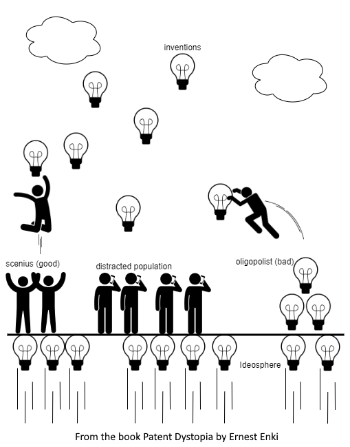

- This content is a longer summary of the boook that lists every patent issue, offering more details for those who would like further information without reading the entire book right away. Alternatively, there is also a short summary.
- Like any book summary, this overview cannot do the original text full justice. It only provides a superficial look at the main points. Please read the entire book for comprehensive explanations, more details, nuances, real life examples, thought experiments, discussions of common rebuttals, facts, and interesting stories.
- Capitalized terms such as “Education,” “Invention,” or “Diffusion,” indicate that these are key concepts, to be defined in detail. Note that “Invention” is capitalized only when referring to the principle or abstract idea.
- © 2025 Ernest Enki. This page content is licensed under a Creative Commons Attribution 4.0
International License (CC BY 4.0).
You may copy, share, remix, and use this content for any purpose, including commercial use, as long as you provide proper attribution by including a hyperlink to the original source ({{ site.url }}{{ page.url }}). - Feel free to customize reader experience
- Some of the references might change or disappear over time, a possible solution is to use a web archive
- This document might be frequently updated with corrections, clarifications, and more information. First published: 29/Jan/25. Last edited: 27/Feb/25
Introduction
Humanity faces a multitude of challenges, including climate change, economic bubbles and inequality, poor Education , addictions, and many more. But what if the root cause, the hidden constraint, lies not in individual problems, but in the very system that is supposed to encourage progress?
This book argues that the patent system - the fundamental principles used by patent laws in every country - while often viewed as a driver of innovation, has instead become a noose around humanity's neck. It strangles job creation, prevents competition, widens inequality, reduces true innovation, and disrupts the natural flow of capitalism.
At first glance, the patent system may seem like a niche topic, but we will explore how it impacts all aspects of society, from cutting-edge technologies to issues that affect our everyday lives, such as the price of tomatoes at the supermarket, the struggles of small and medium-sized enterprises (SMEs), access to medicine, and even the broader challenges of Education and national development.
While patents may seem like a terribly dry and boring topic, and perhaps a little intimidating, this book skips the irrelevant technicalities and keeps the story engaging and relevant to the average person.
You will learn interesting stories and answers to some of today’s most pressing mysteries, such as:
- Why worker bargaining power and purchasing power are shrinking while inflation rises
- Why we work long hours despite technological advances
- The "productivity paradox," which began in the 1970s
- What all nations that have achieved developed status have in common, including the United States (US), Britain, Japan, South Korea, and now the People’s Republic of China (China)
- Why most developing countries struggle to escape poverty
- The unparalleled innovation and good quality in the software industry, compared with other sectors
- Why Hollywood became the global center for filmmaking
- What the patent system was originally designed for
- Why companies can get away with planned obsolescence of goods, shelving useful inventions or making their products impossible to repair
- Why the belief that patents can protect small inventors is a myth, the David vs Goliath fallacy
- How the computer revolution actually started
- Why industries driven by trends, like fashion and interior design, employ so many people
- How the Soviet Union was unexpectedly competitive during the space race
- How NASA caught up with the Soviet Union in the space race
- The rise in inequality in many countries following the fall of the Soviet Union
- Why baby boomers rule many countries, even though they are a minority
- Why neoliberal policies in the 90s failed to create competition, leading to markets dominated by oligopolies
- The unique success of Israel in replicating Silicon Valley sustainably
- The role of war in reducing inequality
- Why we are stuck in cycles of economic booms and busts
- The phenomenon of "secular stagnation"
- The real reason why deflation is a problem
- How to achieve prosperity and increasing living standards without economic growth
This book is for everyone. Whether you are a seasoned economist, a policymaker driven by humanitarian goals, an interested citizen, or simply a curious high schooler, these pages offer a compelling case for rethinking humankind’s recent history and the very foundation of innovation.
It is an invitation to embrace a bright future in which progress flows freely, unconstrained by the shackles of a system whose time is past.
Root causes
Humanity faces numerous challenges, including climate change, loss of biodiversity, environmental disasters, lost middle-class jobs, unemployment, underemployment, job insecurity, overwork, escapism (through addictions or superstition), a mental health crisis, an underground economy, the financialization of the economy, a decline in civic participation, debt, inflation, and many others.
However, we can trace the root causes of these diverse problems to two key factors that heavily contribute to all of them: the lack of jobs and inadequate Education.
Key Concept: Education
Many define Education as merely the acquisition of knowledge, but that alone is far from enough to thrive.
Education, in its ideal state, is the process by which individuals or entities (like groups, companies, governments, society) acquire knowledge, skills, social capital, and meta-Education; with the purpose to not only survive but thrive in the marketplace or life in general.
- Knowledge: the theoretical understanding of various subjects including foundational concepts, technologies, tools, methodologies, best practices, economic factors, historical context, customers, regulations, traditions, and trends.
- Skills: the practical application of knowledge to perform tasks efficiently and quickly. This is knowledge put into action. Skills include both those specific to one’s field and general abilities such as matching the right knowledge to a real-world problem, digital literacy, negotiation, time management, prioritizing, decision making, and problem-solving.
- Social capital: the relationships that foster trust and credibility, among both peers and
strangers.
It is essential for building strong networks and navigating social environments effectively. There
are
three
key types of social capital:
- Self: personal social knowledge and skills, such as active listening, effective communication, reading nonverbal cues, public speaking, helpfulness (while avoiding exploitation), cultural sensitivity, social etiquette, conflict resolution, the ability to recognize psychological issues in oneself and others, and knowing how to build and maintain meaningful connections.
- Indirect contacts: which experts and thought leaders to follow and learn from via channels such as social media, books, videos, podcasts, workshops and conventions.
- Direct contacts: direct relationships with others in the field, from junior colleagues to senior professionals, allowing for the exchange of advice, knowledge, and support, thereby fostering mutual growth and opportunity.
- Meta-Education: The art of learning. It covers effective learning techniques, staying motivated for continuous learning, and distinguishing between good and bad Education (knowledge, skills, or social contacts like experts and colleagues). It also includes developing self-awareness (knowing your own strengths and weaknesses), self-care, emotional intelligence, adaptability, critical thinking, and creativity.
Lack of jobs makes it hard for individuals to care for themselves, their family, their community, the enviromment or society in general. The result is often shortcuts by individuals and socities, such as fake prosperity, debt, escapism, etc.
Inadequate Education prevents us from filling the opportunities that do exist.
Therefore, the primary objective of this book is to help solve the lack of jobs problem and, where possible, address inadequate Education, as the latter will be the sole focus of the next book.
What Creates or Destroys Tasks and Jobs?
Let's try to understand what forces create or destroy jobs. These can be summarized in this diagram:
Key Concept: Innovation cycle
Inventions are new practical ideas, such as new products, methods of production, or processes. Before its implementation, each invention is a theoretical creation that exists in the mind of its inventor, on paper, or in computer files.
To avoid confusion, we adhere to the definition used by the US Patent and Trademark Office: “any new and useful process, machine, manufacture, or composition of matter, or any new and useful improvement thereof.”
Introduction is the initial phase of an invention’s implementation, bringing it to the real world. It can involve producing a new device or chemical, opening a factory, or teaching a new process to staff
Diffusion is the spread of an invention throughout society. Introduction and Diffusion are thus the two phases of implementation, bringing the invention into reality.
The implementer’s identity is irrelevant: It could be the original inventor, a competitor,
tinkerer,
researcher, a patent licensee, a patent infringer, or anyone else.
What matters is the timing: The first phase of the implementation of a new invention is the
Introduction;
and when the invention spreads, which is the second phase, that is Diffusion.
Ideosphere is where collective ideas reside, interact, and evolve. Here, a vast array of concepts—from inventions to artistic creations—are stored, evaluated, connected, and shared.
Like the natural world's biosphere, the Ideosphere hosts a variety of ideas and solutions to similar problems, with many niches. It thus enables competition, for instance, among a variety of Inventions for energy storage in batteries or among different approaches to AI training.
Innovation Cycle, or simply Innovation, is the process of producing or adopting and then exploiting a novelty in economic and social spheres. This includes new or changed products and services, methods of production, or management systems. Innovation is both a process and an outcome.
Each stage in the Innovation Cycle — Invention, Introduction, Diffusion, and the Ideosphere — fuels the next, collectively driving innovation forward.
Key Concept: The Four Horsemen of Creative Destruction
- Breakthroughs: These are inventions that introduce entirely new products or services. New breakthroughs can lead to the creation of new markets and industries, and the necessity of old companies adapting, leading to new jobs and opportunities.
- Obsolescence: Older products and services become obsolete when better versions become available. This drives consumers to purchase the latest models and upgrades.
- Complexity: Implemented new inventions make the world more complex. New inventions and jobs are needed to address these challenges and simplify things. For example, hybrid vehicles require new technologies and skills to manage the complexities of their dual power systems.
- Trends: People are influenced by trends like fashion, interior design, architecture, lifestyle trends, ... which are influenced by new products and services and end up creating more jobs and opportunities
To achieve our main objective (creating more jobs than there are people), we need to:
- increase innovation, which will generate new tasks and jobs, which are generally better paid and more negotiation power, via the Four Horsemen of Creative Destruction
- increase competition, which will generate more old tasks and jobs, which are generally not as good as new ones, but nonetheless increases worker and companies bargaining power
- slow down automation, which destroys tasks and jobs (mostly old ones)
- improve Education, which allows workers and companies to fill existing available tasks and jobs, allowing them to create demand, fuel the Social Signaning Drive, and increase the Diffusion of inventions
The best way to achieve these objectives is to abolish the patent system, which will unlease a normal free market (without goverment granted monopolies and oligopolies), and letting the forces of creative destruction work freely, which will allow Smalle and Medium Enterprises (SMEs) to flourish.
The prosperity of SMEs is a core objective of the book, because they comprise a staggering 99% of businesses and contribute 60% of employment in OECD countries.
The reason why the patent system is our main culprit can be found in the many problems that patents creates:
Patent Problem #1: Subjectivity of Borders Between Ideas
Patents assume there clear boundaries exist between distinct ideas such as inventions. In reality, ideas often overlap with what we would consider obvious, are inspired by previous inventions (prior art), and evolve over time, making it impossible to define precise boundaries. Different people—such as patent examiners, lawyers, and judges—often interpret a patent’s scope in wildly different ways.
If we were to survey a thousand experts on whether an invention is obvious and how similar it is to other inventions, the results would show that all inventions share some degree of obviousness and overlap with others, and there are no black and white answers, like this graph:
Proof of this can be found in several areas:
- Legal Cases: Many patent cases reveal that even large, wealthy companies—despite consulting top patent lawyers to avoid infringement—are found liable for infringing on others’ patents. This demonstrates the inherent difficulty in drawing clear boundaries.
- Economic and Intellectual Observations: Economists and thinkers have noted that it is nearly impossible to separate different inventors' contributions, as ideas naturally overlap and build on one another. This observation challenges the notion of distinct, non-overlapping inventions.
- Insurance Market Trends: There is a notable lack of a robust insurance market to protect companies from unintended patent infringement, whereas similar insurance policies for physical property (such as land) or for copyright infringement are common. This discrepancy indicates that the uncertainty surrounding patent scope is significantly higher.
This pervasive subjectivity creates uncertainty around the scope of patents and the outcomes of potential litigation. As a result, large companies acquire vast numbers of patents, creating a portfolio of patents, hoping that some will withstand scrutiny. They also invest in large legal teams to defend their patent portfolio.
Large companies hold a significant advantage over SMEs because they have more money, staff, time, and experience to mitigate the risks created by the subjectivity in the patent system.
These large companies use this undeserved and disproportionate power to drive competing SMEs out of business through accusations of patent infringement. Often, this occurs behind closed doors during negotiations, but at times such abuses become public knowledge.
Even the mere threat or rumors of a patent lawsuit from a larger company can be fatal for an SME. Investors, banks, and suppliers may refuse to do business with the SME because of the high risk of failure. Recruiting talent becomes much harder, and key employees—especially those in technical or leadership roles—might leave for more stable opportunities, further weakening the company’s ability to compete. Prospective customers and partners who may view the SME as unreliable or too risky to work with.
WHEN SUBJECTIVITY IS INVOLVED, FAIRNESS AND JUSTICE CAN EASILY BE OVERSHADOWED BY THE POWER OF WEALTH.
The Subjectivity Poison
The subjective nature of patent evaluations introduces significant uncertainty into a legal system that strives for objectivity. This uncertainty acts like a poison, spreading into various areas, including:
- Determining the appropriate art unit (department in the Patent Office) for a patent application.
- Analyzing applications and comparing them to existing inventions.
- Identifying instances of infringement.
- Judicial interpretation of patent law.
- Antitrust and market abuse prosecution.
Furthermore, when large companies use the patent system to drive SMEs out of the market, they acquire an abnormal amount of power over employees, consumers, suppliers, and others. These affected parties often seek relief through legislative action—filing lawsuits or calling for new laws and regulations, such as rules to prevent employee abuse or to require that products are designed to be easy to repair.
However, this poison of subjectivity has weakened those solutions as well, because any remedy is bound to involve subjective elements. For example, what exactly does "easy to repair" mean? Empowered individuals and companies, which possess significant bargaining power in highly competitive industries, can make such subjective decisions with relative ease. In contrast, asking governments to make these decisions is using the wrong tool for the job.
The patent system moved society from being empowered by individuals with massive bargaining power making distributed decisions—decisions that are resistant to corruption, quick, constantly evolving, inexpensive, and sensitive to local needs—to centralized decisions made by the legal system, which are often slow, expensive, outdated, and easily mistaken or corrupted. We have replaced a flexible system with a rigid one that does not respond well to changes on the ground. Legislative power cannot replace bargaining power due to inherent subjectivity.
Conclusion
- The patent system should not exist, because the law cannot be applied in a reliable and predictable way.
- Big companies take advantage of the subjectivity in the patent system, using them against SMEs, decreasing the number of jobs in the economy. reducing jobs, competition, and innovation.
Patent Problem #2: Ideal Tool for Abuse of Market Power
Patents are often seen as a way to protect new ideas, but history shows that they can also serve as powerful tools to acquire and safeguard additional control over entire markets, well beyond technology.
This raises an interesting question: Could companies amass disproportionate market power without the aid of patents? Let us analyze some historical examples:
In the 1950s, Bell System faced a consent decree that forced it to freely license thousands of patents, including the transistor, enabling the rise of the computer industry in Silicon Valley. Despite retaining control of its telecommunications patents, Bell lost its grip on many other fields, proving that its monopoly had relied on that broader portfolio of technology patents.
A similar antitrust action struck Xerox in the 1970s, compelling the company to grant licenses for its office copier patents. Although Xerox had improved its copiers over time, genuine innovation in the copier market soared only after other firms gained access to those key patents.
Aircraft manufacturing in the United States suffered from the Wright brothers’ aggressive patent lawsuits, which delayed the growth of aviation in the early twentieth century. The threat of legal action and high licensing fees forced many potential airplane producers to withdraw from the market. Only when the government set up a compulsory patent pool in 1917, allowing all manufacturers to use the patents for a small fee, did American aviation catch up.
Later, during World War II, Thurman Wesley Arnold at the Department of Justice led investigations into various industries where patent abuse crippled development, including tungsten carbide tools, fuel additives, synthetic rubber, metals, and glass production. There is even a possibility that foreign companies—including those associated with the Nazi government—exploited American patent laws to undermine competition in the United States, while ignoring patents in their own countries to accelerate industrial progress. The reader is strongly encouraged to study Thurman Arnold's analysis of patent abuse, as many of these same practices are still used today and help explain why the Great Depression was so severe.
The problem persists in modern times. Firms acquire patents for new drugs and technologies, then charge much higher prices than foreign or generic alternatives. Powerful companies also threaten smaller rivals with expensive lawsuits, forcing them to license weak or questionable patents rather than challenge them in court. Critics have pointed out that some companies appear to patent innovations specifically to shelve them, blocking others from developing or selling competing products.
Policymakers often struggle to address these abuses because the patent system, by design, introduces subjective judgments about what is truly new or non-obvious. This subjectivity opens the door to endless legal arguments and lobbying that can mask the deeper issue: once a company secures a patent, it can wield that privilege to control a market and limit everyone else’s freedom to innovate or compete.
Conclusion
Patents are intended to grant short-term monopolies over inventions, but they have instead become the foundation for permanent control across entire industries, well beyond technology. The legal system struggles to address these patent and market abuses, due to the subjectivity involved.
Patent Problem #3: MAD Oligopolies
Readers may wonder how companies manage patents and why most markets are not dominated by a single monopoly.
The answer lies in a patent strategy known as “Mutually Assured Destruction” (MAD), a concept used in the Cold War. In this context, MAD involves companies building large patent portfolios and threatening legal action against competitors for patent infringements. This strategy aims to deter rivals from challenging their patents or to force them into cross-licensing agreements.
Similar to how MAD kept the United States and the Soviet Union from engaging in full-scale nuclear war, large corporations use their extensive patent holdings to prevent attacks from competitors. The high costs associated with obtaining and defending patents play a significant role in this strategy. For example, securing a utility patent in the United States can cost between $5,000 and $7,000 for simple inventions, with additional fees for patent searches. More complex inventions, such as those in software or satellite technology, can cost $15,000 or more, plus higher fees for searches. Defending a patent in court is even more expensive, ranging from $2 million to $4 million and often taking several years.
These substantial financial burdens mean that smaller companies cannot afford to build large patent portfolios or engage in lengthy legal battles. Only large corporations can use the MAD strategy.
These corporations avoid outright legal wars but engage in occasional lawsuits (skirmishes) over some patent infringements, leading to countersuits and private negotiations that establish a new balance of power. Once a patent dispute is resolved, both companies typically continue using the technologies without fear of further conflicts.
Over time, this dynamic leads to the formation of oligopolies, where a few dominant companies control the majority of a market or industry. In such markets, large competitors continuously infringe on each other’s patents but maintain legal peace by using their patent portfolios as deterrents. This creates a patent-free bubble where these oligopolies can freely use any technology without worrying about infringement suits, knowing that any legal challenge would result in a costly countersuit.
Key Concept: Oligopoly
For the purposes of this book, we will adopt the UK definition of an oligopoly: a market in which five or fewer companies collectively hold 50% or more of the total market share.
While duopolies and monopolies do still exist, they are rare. For simplicity, we will refer to all such market structures as oligopolies.
Herd thinking
Oligopolies often display herd thinking for several reasons. Workers typically remain within the same oligopoly due to industry lock-in, and companies don't have the stick of new competition to force them to adopt new ideas. This results in a shared mindset among the dominant companies. Such uniform thinking increases the likelihood of widespread mistakes and flawed assumptions within the industry, leading to severe consequences such as reduced innovation and increased economic instability.
A notable example is the oligopoly of rating agencies—Moody's, Standard & Poor's, and Fitch Ratings—which controlled approximately 95% of credit ratings in financial markets. Their collective decision to grant AAA ratings to mortgage-backed securities they did not fully understand significantly contributed to the 2008 financial crisis.
Another instance of unwise herd thinking is the widespread adoption of just-in-time (JIT) inventory management across various industries. While JIT maximizes profits by keeping stock levels to a minimum, it left many countries vulnerable to supply chain disruptions during the COVID-19 pandemic, leading to shortages of essential items.
Decisions by committee
Decision-making in oligopolies is diluted by committees filled with numerous unaccountable members, instead of decisions by few accountable leaders with skin in the game.
This approach is driven by the oliopolies unique sitation, where they have little to gain, and a lot to lose:
- Their future growth is constrained not because growth is impossible, but because their outdated practices and technologies hinder innovation.
- As industry leaders, they have much to lose, including market share, reputation with customers, media perception, standing in the financial market, and relationships with government.
Committees are created to mitigate risks by involving multiple stakeholders, helping to identify problems before making major decisions. However, this practice also introduces additional risks—often unacknowledged—such as delays, conservatism, increased complexity, and misaligned incentives among team members and between the committee and the organization.
Over time, a committee’s focus shifts from effective decision-making to preserving internal harmony. Negotiations become prolonged, and decisions often result in compromises that do not effectively address real problems but instead serve to maintain relationships among committee members.
Committees also tend to become breeding grounds for political maneuvering, where individuals with personal ambitions manipulate group dynamics for their benefit. Genuine knowledge and skills that could inform better decisions frequently get lost, causing committees to exist primarily to sustain themselves rather than to fulfill their original purpose.
DECISIONS BY COMMITTEE RESULT IN MISALIGNED INCENTIVES, DELAYS, BUREAUCRACY, COMPLEXITY, LOWEST-COMMON-DENOMINATOR THINKING, HERD AND SHORT-TERM THINKING, EXCESSIVE RISK AVERSION, DECISIONS DISCONNECTED FROM REALITY, LACK OF INNOVATION, AND EVEN OPPORTUNITIES FOR CORRUPTION.
At a broader societal level, the rise of oligopolies dominated by sprawling committees represent a significant regression for society.
Historically, humanity has recognized the flaws of central planning, as seen in the Soviet Union and similar experiments. However, we are reverting to centralized decision-making within large corporations, leading to outcomes comparable to those of past centralized systems but on a much larger, global scale, due to the global reach of these corporations, making their centralized control more insidious and impactful.
National Resilience
These oligopolies not only result in fewer jobs, reduced competition, and stifled innovation but also increase risks to national resilience. Their centralization of production becomes a threat when it is obstructed by accidents, pandemics, weather disasters, or other problems, as described By Lina M. Khan, the chair of the Federal Trade Commission.
Conclusion
Large companies have the unique advantage of bypassing the patent system by building extensive patent portfolios and counter-suing anyone who sues them for infringement. This strategy, known as Mutually Assured Destruction (MAD), ultimately leads to the formation of oligopolies composed of the companies that survive this aggressive approach.
These oligopolies leverage their patent portfolios to harass SMEs, ensuring they maintain dominant market positions, but this strategy stifles innovation, disrupts supply and demand, and reduces job opportunities.
The MAD oligopoly results in entire industries being dominated by herd thinking and decision-making by committees.
Patent Problem #4: Cascading Oligopolies
Patents influence not only technology-driven industries but also a wide range of other sectors where technology is essential, such as production machinery and management software. Tech based MAD oligopolies allow these large companies to favour large partners to achieve economies of scale and other benefits. For instance, Foxconn manages most of Apple's manufacturing processes.
This spread the influence of the original oligopolies into adjacent industries, including those that are not stereotypically technology-focused, creating similar oligopolies there. This process continues, with each new oligopoly cascading into further adjacent industries, creating a domino effect.
THE PROBLEMS IN THE PATENT SYSTEM GENERATE OLIGOPOLIES THAT CASCADE, CREATING OLIGOPOLIES IN “PARTNERS” INDUSTRIES: CUSTOMERS, SUPPLIERS, DISTRIBUTORS, CONSULTANTS, FINANCIAL INSTITUTIONS, LOGISTICS AND TRANSPORTATION OUTFITS, MARKETING AND ADVERTISING AGENCIES, EDUCATIONAL INSTITUTIONS, INVESTORS, LAW/ACCOUNTING/COMPLIANCE PARTNERS, TRADE ASSOCIATIONS, INSURANCE PROVIDERS, SECURITY SERVICES, TECHNOLOGY PROVIDERS AND MANY OTHERS.
A great example of cascading oligopolies into non-technological industries is seen in supermarkets. Tech-based oligopolies in suppliers like card systems (point of sale systems) and enterprise resource planning (ERP) software give large supermarket chains an advantage over smaller competitors. This leads to industry consolidation and the formation of supermarket oligopolies. These supermarket oligopolies then pressure their own partners, such as vegetable farmers and milk producers, who are already under pressure from their own tech oligopoly suppliers in farming equipment. As a result, these partners must also consolidate into their own oligopolies to survive.
In a free market (without patents), companies would need to work with numerous small enterprises, for the sake of innovation, revenue, speed, etc. However, within oligopolies, large firms prioritize policies that benefit themselves and their investors, often disadvantaging SMEs:
Oligopoly policies that trigger cascading effects
- High Prices that are Disproportionate to Costs: Inflated prices become a strategy, restricting business access to only the wealthiest companies. This tactic increases profit margins while reducing the overall number of partners, further lowering costs through savings in logistics, paperwork, negotiation, and support time.
- Discounts and Privileges: Large partners receive discounts and privileges when they purchase or sell in bulk. These privileges include generous financing options, priority logistics, early access to new products, enhanced services and support, co-marketing and advertisement support, access to data and analytics, customized packaging and branding, regulatory and compliance assistance, exclusive access to innovation labs, and supply chain integration. In contrast, SMEs must pay higher prices and operate under more stringent conditions.
- Bundles: Big companies often bundle products and services into large packages. For example, they might sell a range of products when only a few are needed or require partners to purchase a full year's subscription for short-term use. This forces SMEs to pay for unnecessary components, increasing their costs and reducing flexibility.
- Preference for Shared Culture: Large companies prefer to collaborate with partners that share similar cultures and values, including standards for professionalism, communication, and processes. While this reduces risks and miscommunication, it makes it difficult for SMEs to participate in the market.
- Vertical Integration: Big companies control suppliers and distributors through acquisitions, securing direct access to raw materials and components. This reduces dependency on third parties and gives them greater influence over market access and customer relationships.
- Channel Squeeze: Dominant firms pressure suppliers by demanding lower prices or larger discounts, squeezing their profit margins and making it difficult for SMEs to compete.
- Exclusive Arrangements: Companies lock partners into exclusive relationships, preventing them from dealing with competitors and making them dependent on the dominant firm’s preferences.
- Regulatory Arbitrage: Large companies strategically position parts of their production in locations with favorable regulations and exploit loopholes, a strategy that SMEs cannot afford to implement.
- Lock-ins: Companies make partners reliant on their products or services, making it difficult for them to switch to alternatives without incurring high costs.
- Lobbying: Large firms use their influence to shape government policies and regulations in ways that favor established companies over new entrants, often raising barriers for SMEs.
- Anti-competitive and illegal behaviors: such as collusion, price fixing, standardization of contracts and terms, bribing officials (either blatantly or through revolving doors), market allocation (dividing territories or customers among competitors), bid rigging, hiding pollution, fraudulent reporting to shareholders or regulators, manipulating financial markets (spoofing, pump and dump), tax evasion, obstructing investigations by regulators or law enforcement, cybercrimes (such as hacking competitors or sabotaging their systems), and strategic shelving of inventions. These behaviors are much easier to achieve secretly when only a few wealthy players dominate the market.
- Hidden Costs: Oligopolies misrepresent the likelihood of certain events, leading SMEs to incur higher costs than initially anticipated, such as unexpected expenses in implementing enterprise resource planning (ERP) systems.
- Automation: Large companies can afford to automate more, even in the face of worsening services and products for their partners—such as customers, employees, and suppliers—because these partners often have no alternatives or negotiation power. This increased automation leads to greater efficiency, which these companies then leverage to further consolidate their market power.
- Payment Difficulties: Complex and inflexible payment processes can cripple SMEs, which lack the resources to manage delays or negotiate terms effectively.
- Changing Requirements: Large firms frequently alter project requirements, making it difficult for SMEs to meet expectations and maintain stable operations.
- Lawfare: Dominant companies use legal systems to harm competitors through complex contracts, one-sided agreements, and strategic lawsuits, which SMEs cannot afford to defend against.
- Unrealistic Demands: Big firms impose excessive requirements on partners, such as oversized orders and excessive reporting, draining SMEs' resources.
- Inflexibility: Strict processes for payments, contracts, or deliverables make it difficult for SMEs to adapt to large companies' needs.
- Impatience with Others: Oligopolistic companies set tight deadlines and show little tolerance for small delays or issues, pressuring SMEs to keep up.
- Patience for Oneself: Ironically, extensive internal delays, bureaucratic processes and mistakes in large companies most be tolerated by SMEs. These problems indirectly hold SMEs hostage, as their resources are tied.
- Commoditization of Others: Dominant firms force partners to offer standardized products or services, making them interchangeable and reducing their profit margins.
- De-commoditization of Oneself: While commoditizing partners, large companies maintain unique features in their own products to protect profit margins, such as Apple's proprietary "Lightning" chargers and specialized printer ink cartridges.
- Denylisting: Big companies create "no go" lists, excluding dissenting partners from business interactions and sometimes sharing these lists across the industry.
- Excessive Bureaucracy: Lengthy and complex processes, such as vendor onboarding and product inspections, burden SMEs with high costs and delays.
- Forced Intermediation: Large firms impose themselves as mandatory intermediaries in transactions, taking excessive commissions, as seen with app stores charging high fees on in-app purchases.
- Intermediary Betrayal of Trust: Dominant companies use their intermediary roles to later betray partners by launching competing products or exploiting collected data, undermining trust and competition.
- Customer abuse: Price gouging, hidden fees, misleading advertising, planned obsolescence, planned incrementalism, predatory lending, loyalty tax, bait-and-switch tactics, data exploitation, unnecessary upselling, non-transparent pricing, excessive cancellation fees and process, forced arbitration clauses, subscription traps, false scarcity tactics, discriminatory pricing, inadequate product labeling, selling defective products, poor customer service policies, excessive restocking fees, denial of refunds for valid complaints.
- Employee Abuse: Big firms often exploit employees through practices like wage theft, unpaid overtime, unsafe conditions, restrictive non-compete clauses, and unfair treatment. SMEs rarely can get away with similar practices.
SMEs are often at the receiving end of many of these tactics, making it difficult for them to survive, let alone thrive, as large companies effectively set the rules of their relationships.
Even if an SME escapes such mistreatment by not being directly involved with an oligopolistic company, they still frequently must compete with these dominant firms. Large companies can (literally and figuratively) afford to engage in many unethical and sometimes illegal behaviors, hide their tracks, and hire massive teams of lawyers to defend themselves if they are ever prosecuted. This allows oligopolistic companies to obtain unfair advantages in the job market, enabling them to out-recruit, out-advertise, out-invest, and excel in many essential areas compared to competing SMEs.
The result is consolidation of companies in adjacent industries, creating new oligopolies — comprising the few large entities that could survive such abuses and consolidated to have the necessary negotiating power to stand up to the original oligopoly — and thus reinforcing the cycle of consolidation.
While many of these tactics are used by any large company, they become much more common and impactful within oligopolies. In a free market (without patents), large companies would still exist but would not rely on patents or oligopoly connections to dominate. They would face constant competition, making it risky to mistreat partners or push them toward new competitors.
Indirect cascading oligopoly creation
Patents not only contribute directly to the creation and spread of oligopolies; they also indirectly incentivize them.
Ruined ecosystem
Collaboration with other companies of similar sizes is crucial for the growth of new businesses. SMEs are often innovative, flexible, quick to adapt, tolerant of mistakes, and honest in negotiations. They strive to differentiate their products and services to compete effectively. However, without a supportive network of similarly sized partners, new businesses cannot challenge dominant oligopolies, creating a vicious cycle that hinders their emergence and growth.
Government mismanagement of the economy
Oligopolies reduce job opportunities, innovation, and supply and demadn leading to a weaker market, which is compounded during economic crises or disasters like pandemics. To stimulate economic activity, governments often lower interest rates and print money. However, this additional money typically benefits large companies for several reasons:
- Ease of Borrowing: Big companies, with their strong financial histories and stable market positions, can borrow funds more easily than individuals, new companies, or SMEs.
- Cantillon Effect: Extra money enters the economy unevenly, first reaching well-connected firms, often financial institutions, and driving up stock prices of oligopoly companies. New companies and SMEs rarely benefit.
- Investment in Stock Market: Low interest rates encourage households to invest in the stock market, which is dominated by oligopolies.
- Government Purchases: Governments buy corporate debt to support the market, often targeting large companies.
With increased money supply, oligopolies use the funds to acquire competitors, merge with other firms, buy back shares, and obtain more patents. These actions strengthen oligopolies, making them less vulnerable to competition and better equipped for costly legal battles.
Long periods of low interest rates create market bubbles. When these bubbles burst, governments intervene to support large companies deemed "too big to fail" to prevent economic collapse. They may also prop up "zombie" companies that cannot generate enough profit to cover expenses. This support prevents new companies from emerging and eliminates opportunities for smaller businesses.
Additionally, large companies have substantial financial resources, allowing them to borrow more during uncertain times. This advantage enables them to buy or harass struggling SMEs, further consolidating their market dominance and reducing competition.
WHEN THE ECONOMY IS BOOMING, OLIGOPOLIES TAKE ADVANTAGE OF CHEAP MONEY TO GROW MORE AND SWALLOW COMPETITORS; WHEN THE ECONOMY IS STRUGGLING, OLIGOPOLIES RECEIVE EXTRA HELP FROM GOVERNMENTS AND ABSORB STRUGGLING COMPETITORS. HEADS OR TAILS, OLIGOPOLIES WIN.
Complex regulations and legislation inadvertently strengthen oligopolies by creating barriers for smaller competitors. In economies dominated by oligopolies, declining tax revenues reduce the government's ability to monitor the private sector effectively. This lack of oversight allows oligopolies to engage in bad practices such as unsafe lending, mistreat employees, and harm the environment without facing consequences. Oligopolies can also manipulate information or bribe government officials to protect their interests.
When malpractice is exposed, governments often respond by enacting more complex regulations and reporting requirements instead of enforcing existing rules. These new regulations increase compliance costs, making it difficult for SMEs to compete. Large firms can afford extensive compliance teams, while smaller companies struggle with the expenses, further entrenching oligopolies.
Conclusion
Patents are often associated with technology, but they also help form oligopolies in various unrelated industries. An initial oligopoly uses different strategies to ensure that large companies dominate related fields, causing a ripple effect that creates more oligopolies, much like an epidemic. However, there is a positive side. Removing patents from an industry once controlled by an oligopoly can introduce competition. This change discourages the formation of oligopolies in related sectors, leading to a positive ripple effect. Increased competition and job creation can revitalize the economy, turning a harmful cycle into a beneficial one.
Patent Problem #5: The Global Shadow Patent System
One argument in defense of the patent system is that countries with few patent applications tend to struggle in terms of innovation and economic growth, while countries that receive the most patent applications thrive. Does this not indicate that patents help the economy and foster innovation?
This paradox is explained by the global shadow patent system established through international agreements like TRIPS, which require countries to prioritize patents filed abroad.
As a result, even though patents are only valid in the countries where they are granted, once a patent is granted in a new country, any existing use (very suddenly) becomes illegal, forcing local industries to abandon products or negotiate costly licenses. This creates a de facto global patent protection system, where patents must be assumed to cover the entire world.
IN THEORY, THERE IS NO GLOBAL PATENT SYSTEM, AS EACH COUNTRY HAS ITS OWN INDEPENDENT PATENT SYSTEM. IN PRACTICE, THERE IS A GLOBAL SHADOW PATENT SYSTEM, WHICH EFFECTIVELY PREVENTS THE USE OF ANY TECHNOLOGY PATENTED ABROAD.
Additionally, the patent system hinders Education in poorer countries. Without access to patented technologies, these countries cannot train workers to use advanced tools and processes, limiting their economic growth. For example, the inability to use tungsten carbide before World War II due to patent restrictions slowed American industrial development.
Most people in these countries are unaware of how patents restrict their economic progress, similar to fish being unaware of polluted water.
Patent offices in smaller or less powerful countries struggle to challenge patents from major markets, allowing large companies to maintain their dominance and restrict competition globally.
Conclusion
In summary, obtaining a patent in one country, especially a developed country, in practice establishes that patent over the entire planet, discouraging the whole of humanity from using the related technology, and indirectly spreading the patent problems we are discussing all over the globe.
Intermission
After examining these initial patent problems, it is an appropriate time to pause and develop a mental picture of the situation. An effective way to visualize the patent system is to view it as a dangerous virus. For simplicity we can consider it in two stages: increased viral potency and a global epidemic.
Increased viral potency, the virus becomes stronger:
- Subjectivity: The subjectivity of borders between ideas gives an advantage to large corporations, which use their size to acquire vast numbers of patents with uncertain scopes, and large legal teams to defend those patents. These patent portfolios and legal teams are used to bully SMEs that challenge their market share.
- Market abuse: These large corporations then extend their influence over entire markets, expanding their dominance well beyond technologies.
- MAD oligopolies: Oligopolies are formed by the few companies that survive the MAD strategy, where each large company infringes on the others’ patents but cannot be prosecuted for it.
These problems, together with the next twenty-plus patent problems that will be examined, compound to increase the potency of this virus. This heightened potency inflicts greater damage on its host—namely, specific industries.
Global epidemic, the virus spreads in two ways:
- Across industries: These tech-based oligopolies then cascade into adjacent markets, even those that are less stereotypically technological, creating a domino effect.
- Across countries: Oligopolies assert their dominance globally by leveraging the global shadow patent system.
This ultra-potent virus becomes extremely infectious. It spreads uncontrollably through other industries, countries and the global economy, causing widespread harm.
The number of examples of these oligopolies is daunting. Consider this just a sample of the most well-known ones:
- Consumer Goods and Retail: Supermarkets and convenience stores, personal care products, soft drinks, beer, luxury goods, fast food chains, breakfast cereals, pet food, coffee chains, energy drinks, tobacco, toy manufacturers, theme parks, athletic footwear, cosmetics, dairy products, furniture retailers, home appliances, office supply retailers, movie theatre chains.
- Health: Pharmaceuticals manufacturers, pharmaceutical distribution, eyewear, diapers, baby formula, insulin, medical device manufacturers, Healthcare IT, diagnostic laboratories, dietary supplements, safety equipment, dental products, hospital chains.
- Technology and Electronics: Smartphones, semiconductors, video games (consoles and platforms), consumer electronics, hearing aids, cloud computing, streaming platforms, search engines.
- Industrial and Manufacturing: Automobiles, residential and commercial elevators, agriculture machinery, fertilizers, pesticides, construction equipment, cement production, chemicals, shipping and logistics, industrial gases, steel manufacturing, glass manufacturing.
- Services and Professional Industries: Consulting firms, accounting firms, law firms, courier and delivery services, wireless carriers, internet service providers, payment processors, banking, financial services, insurance, health insurance, stock exchanges, clearing houses.
- Transportation and Travel: Airlines, aircraft manufacturers, automobiles manufacturers, car rentals, automotive components and tires, cruise lines, ride-sharing services, railroads, shipping container manufacturers, freight companies.
- Media and Entertainment: Media conglomerates, music streaming services, video streaming platforms, book publishing.
- Energy and Natural Resources: Petroleum retail and refining, electric utilities, natural gas production, mining and metals.
The patent system is not the only factor contributing to the creation of oligopolies; regulatory environments and market dynamics also play significant roles. However, the patent system remains a major contributor.
Even if we generously assume that each oligopoly only has a small negative impact, such as a 1% increase in prices and a 1% decrease in available jobs, the large number of oligopolies compound their effects. This results in significant increases in the cost of living and the severely poor job market we see today.
Some argue that oligopolies are natural outcomes of economies of scale, network effects, and modern technologies, which tend to concentrate market power in a few players. However, this perspective overlooks several facts:
- Investors should be eager to invest vast amounts of money in new challengers to these oligopolies, as the returns are very promising.
- Many oligopolies have not seen changes in their membership for many decades.
- Countries known for patent piracy, such as China today, often have thriving competition.
- Chinese brands are frequently the only ones challenging Western oligopolies, unintentionally preventing a global cost of living crisis by providing affordable goods.
We will explore patent pirates later in this book.
We could conclude our critique of the patent system at this point, as its foundational principle—that ideas have non-subjective boundaries—crumbles under even slight scrutiny, delivering a death blow to patents. This flawed foundation propagates market abuse and the formation of oligopolies across various industries and regions.
However, we will continue to enumerate the many detrimental effects of the patent system, allowing it to die a thousand cuts if necessary, and in case readers find some problems more serious or pertinent than others. Although many of the subsequent issues have roots in subjectivity, the reader is encouraged to set that aside to maintain the semblance of a solid logical foundation as we analyze further problems.
Patent Problem #6: Reliably Detecting Obvious Patents
Patent examiners must determine if patent application is obvious to an "average skilled worker in the industry". Their inability to identify and reject obvious inventions is well knonw. The problem is the assumption that every patent examiner has the same mental image of what this "average skilled worker" is. Workers have varying levels and types of intelligence, experience, training, and access to resources.
Even if patent offices had unlimited resources, the fundamental problems would persist. Industries are becoming increasingly complex, so it's impossible to reliably determine what is common knowledge today and what is not, and if an invention is genuinely new or obvious.
Patent offices are attempting to be omniscient; they feign an understanding of all industries simultaneously, including the current state of technology in every one of them.
Prizes
Some would argue that we should be able to identify obvious ideas to deny them patents, given we have the ability the identify the opposite, very smart ideas via prizes such as Nobel prizes or Oscars.
However, prizes are drastically different mechanisms, and far superior to patents, due to three main reasons:
- Due process: Prizes are only granted after extensive due process such as research and comitee dsicussions, whereas patents in the US for example, are often granted after being reviewed by only 1 or 2 patent examiners, after only an average of 19h of examination.
- Stakes: Prizes have low stakes, mistakes are at most embarassing. Wrongly granting patents can drive companies out of business and stifle innovation in entire industries.
- Timing: Prizes are granted after an idea has proven itself, while patents are granted to the smallest ideas, before they have ever proven to be of value.
Conclusion
- Patent offices often grant patents to obvious inventions, giving big companies and advantage, as they can obtain more such patents and use them against SMEs, therefore decreasing the number of jobs in the economy.
- Prizes are drastically different mechanism to regognize and incentivize ideas, but far suprior to patents, because they are only granted after extensive due process, have low stakes to society, and are granted after an idea has proven itself.
Patent Problem #7: Retaining Talent in the Patent Office
Patent offices need examiners who are well-versed in the latest technology within their industry specialization. However, many industries offer higher pay, better career prospects, less stress, and more engaging work than a patent office can provide.
Most examiners at a patent office are inexperienced, which hinders their ability to detect obvious inventions, identify relevant prior art, or recognize incomplete disclosures about how an invention works.
As a result, despite the existence of a formal patent-examination process, the system often operates more like a registration system, in that a determined patentee can often secure almost any patent they pursue. While the claims granted may not be as extensive as initially desired, a patent is likely to be issued after the revisions.
Some would argue that any goverment agency that oversees industries face the same problem, like the FDA or environmenta agencies, but their narrow scope allow their employees to specialize in fewer subjects, and they can levereage experts to create high level rules and procedures, which can them be applied by a mass of less experienced workers facing predicatable problems.
Patent Offices pretend to be omniscient, covering all industries and all existing technologies, and every patent application is (theoretically) a completely new invention, making it impossible to create high levle rules and procedures like other goverment agencies.
Conclusion
- Patent offices around the world face an impossible challenge in acquiring and retaining talent, given their unrealistic ambition of overseeing every industry. This results in more invalid patents being granted, again benefiting large companies, which can accumulate more of these invalid patents and use them against SMEs, reducing jobs, competition, and innovation.
Patent Problem #8: Fake Inventions
Another unacknowledged fundamental assumption of the patent system is the common-sense expectation that the patented invention should work, meaning that it should perform the functions described. Surprisingly and disturbingly, a patent office typically does not know if an invention works or is a fake.
The case of Theranos, a company that received hundreds of patents for questionable technologies, illustrates this problem. The company used its patent portfolio to gain credibility and attract employees, investments and media attention.
Checking if an invention really works as claimed is difficult because:
- Logistical constraints: Inventions often involve large-scale machinery, hazardous materials, perishable components, present considerable difficulties in transportation, testing, and storage. That’s why inventors cannot bring a physical version of the invention to the patent office.
- Resource limitations: Even if functional models were readily available, objectively evaluating their performance would be hampered by tight timelines and resource constraints.
- Information asymmetry: The assessment often relies heavily on the information provided in the application itself, only words and diagrams on paper, alongside the examiner's existing knowledge. This creates a disparity in available resources, disadvantaging the examiner compared with the inventor, who usually has an extensive research team and a development background.
PATENT EXAMINERS ARE FORCED TO LITERALLY GUESS IF AN INVENTION COULD CREDIBLY WORK.
This is one of the many reasons why measuring innovation by the number of patents issued to a company or country is a deeply flawed measurement.
Conclusion
- It's impossible to check if an invention works without spending vast amounts of resources, which patent offices would never be able to do.
- This is not merely a problem of useless patents being granted. These fake inventions discourage real innovators, as they could face legal troubles if they create a technology that a bogus patent claimed, but never delivered. Illegitimate patents create a legal minefield for real inventors, decreasing innovation and job creation.
Patent Problem #9: Gridlocks Due to Overlapping Property Rights
Patents do not grant any new rights to inventors. Inventors already had the right to use, make, or sell their inventions before they received their patents.
Most economists think of patents as “negative rights,” i.e., the power to stop others from doing things with their property, In that sense, patents are more like censorship than property, as patent holders can censor how others use their own property.
PATENTS ARE NOT ABOUT GIVING RIGHTS TO INVENTORS. THEY ARE ABOUT TAKING AWAY RIGHTS FROM OTHERS
Companies struggle to determine how many patent holders have a saying on the use of their own property, let alone negotiate licenses with all of them. This leads to a gridlock, or what economists call the “tragedy of the anticommons”.
THIS IS MORE THAN A THEORETICAL DISCUSSION: IT MATTERS BECAUSE PATENTS CREATE OVERLAPPING RIGHTS TO THE SAME PROPERTY — THE RIGHTS OF THE REAL OWNER AND THE UNCLEAR RIGHTS OF UNTOLD NUMBERS OF PATENT HOLDERS — INTRODUCING GREAT UNCERTAINTY, COSTS AND FRICTION INTO THE FREE MARKET UNNECESSARILY.
Conclusion
- As a result, large companies often have a significant advantage in navigating existing gridlocks, and they can deliberately create new ones to block SMEs competitors. This reduces innovation, competition, and job creation.
Patent Problem #10: Non-Practicing Entities and Patent Trolls
Non-Practicing Entities (NPEs) acquire patents without the intention of developing or using the patented inventions. They cannot be counter-sued for patent infringement, because they don't produce anything themselves. These entities, sometimes called “patent trolls,” exploit the complexities and subjectivities of the patent system to extract licensing fees or litigation settlements from companies that are actually producing and using the technologies.
But contrary to popular opinion, these pratices have existed for a long time, and such entities cannot be easily identified to curb their practices. A study found that stereotypical characteristics such as source of patents, patent quality, rate of which their patents are invalidated, and litigation patterns, are all similar to normal companies.
The study concludes that the classification of an NPE as a "troll" often depends on subjective perspectives, and the term is used to denigrate opponents in situations where fairness is contested.
A blessing in disguise
Many people in industry think that NPEs and patent trolls exploit those who do honest work, that they are despicable economic parasites. But NPEs and patent trolls offer a hidden benefit in the long run: They are helping to speed up the end of the patent system.
NPEs and patent trolls are real-life embodiments of “reductio ad absurdum,” a strategy of disproving an argument by showing how absurd it is when taken to its logical conclusion. These entities are exposing the absurdity of the patent system by taking it to the extreme; they make the insanity obvious to anyone paying attention. In truth, all patent infringement cases are baseless because the very idea of having a monopoly on an idea (the invention) is absurd, generating court cases that are absurd.
Some have proposed ways to curb such behaviors, requiring companies to use the patent themselves. But this runs into more subjectivity: What counts as “using” a patent exacxtly ? It’s the subjectivity poison showing up again.
The more we think about NPEs and patent trolls and how to stop them, the more we realize that there is no clear line between using the patent system honorably and dishonestly.
Conclusion
- In summary, NPEs and patent trolls are causing more and more problems to society , and this trend will likely continue. The issue isn't the entities doing this: they are just using the patent system as it was meant to be used. The real problem is the patent system itself.
Patent Problem #11: Patents Lasting Longer Than Inventions
While inventions can theoretically last forever, their practical lifespan in the market is limited by factors like technological advancements and changing consumer preferences. As technology advances rapidly, inventions become obsolete more quickly, making the 20-year patent term from the filing date increasingly problematic, as more and more market useful inventions are trapped under active patentes.
The fundamental purpose of the patent system is to incentivize innovation by providing a short-term incentive to inventors in the form of a temporary monopoly that would quickly expire, enabling the general population to freely benefit from the invention.
It is therefore essential that the monopoly period granted by patents be shorter than the average lifespan of an invention. If an invention is obsolete by the time the patent expires, the fundamental mechanism of the patent system breaks down.
However, the situation we have now is that the The original patent holder, benefiting from the invention-related income, customer feedback, and production experience, can secure de facto forever patents by remaining in a unique and exclusive position to develop newer versions of the technology and patenting them, thus ensuring that they maintain their monopoly forever, and that competitors never have a chance to catch up.
Forever patents are one of several patent problems that allow companies to abuse customers in various ways, such as practicing planned obsolescence, shelving useful inventions, or making their products impossible to repair. When a company does not have to fear any competition, it can engage in profitable but unethical behavior that runs counter to its customers’ preferences. If the company faced real competition, such conduct would be unwise, because it would give challengers an advantage.
That’s why this book is subtitled “How the Patent System Strangled Innovation, Job Creation and the Economy.” Patents act like a noose around society's neck: As time passes, even if patent laws remain unchanged, the noose tightens; more and more valuable inventions become trapped by patents, resulting in the strangling of innovation, job creation, and the economy.
This phenomena also helps explain teh productivity paradox, around the 1970s, something "broke" in the global economy: where significant investments in technology and innovations have not led to the expected gains in productivity.
We posit the main reason for this was that the average lifespan of an invention dipped bellow the duration of patents (20y) around that time, allowing big companies to obtain a forever patent potfolio, therefore newer technologies that could be more productive were never allowed to diffuse through society, preventing companies (especially SMEs) from becoming more productive.
The knee-jerk suggestion often heard is to shorten the duration of patents in industries where innovation moves faster. However, this would allow patent applications to be reworded so they fit under an art unit with a longer term, and it would trigger intense lobbying, with every industry trying to secure a longer patent term than others. Some propose reducing the duration of all patents, regardless of the field, but, just like the first idea, deciding on a new term length is highly subjective. Who can determine the “correct” number of years? Even if we found that magical figure and it worked for now, the problem of patents outlasting inventions would eventually return as the pace of innovation catches up. It would also fail to fix many of the other patent issues we are debating.
Conclusion
- Abolishing the patent system promises to address the productivity paradox and corporate abuses such as planned obsolescence, shelving useful inventions, or making products impossible to repair. Doing so would also free numerous SMEs to innovate, bringing more competition and, most importantly, creating greater job opportunities.
Patent Problem #12: Bias Towards Low-Level Inventions
Inventions leverage other inventions to work, so we can see them as depending on lower level inventions, as technology becomes more complex, there are more and more dependencies, which could be exemplified liek so:

The problem is that with the more dependencies an invention has, the more difficult it is to find all the releveant patent holders, let aloen try to negative licenses with each of them. The result is a bias towards low level inventions that have very few dependencies.
THE BIAS FAVORING LOW-LEVEL INVENTIONS HAS PERSISTED SINCE THE INCEPTION OF THE PATENT SYSTEM, POTENTIALLY CAUSING HUMANITY TO MISS ENTIRE REALMS OF INVENTIONS.
For example, the patent aggregator RPX stated in 2011 that there are more than 250,000 active patents relevant to today’s smartphones. If a new company (an SME) tried negotiate with even 1% of these patents licenses, it would be a massive consumption of time alone, imagine the cost in licensing fees.
By prioritizing low-level inventions, we are diverting investment away from higher-level inventions, without any analytical or scientific reasons to do so.
This patent problem enables tactics similar to those used by organized crime, such as those employed by the Mafia. After a business has invested substantial effort and resources to grow, it is confronted by an entity demanding payment for the use of lower level inventions. This demand, which is like threatening to break the company's metaphorical kneecaps, brings a coercive element that can disrupt and harm the business's stability and growth prospects, especially SMEs.
The higher the invention level, the worse the problem gets, as higher-level inventions depend on many lower-level inventions. In one distressing example, in 2001 biopharmaceutical company Bristol Myers Squibb announced that it would not investigate "more than 50 proteins possibly involved in cancer” because patent holders "either would not allow it or were demanding unreasonable royalties.” Patent discussions are not just about innovation and economics, human lives are at risk.
Conclusion
- Patents create an unintentional bias towards low level inventions to avoid licences and problems of using dependency inventions, making is missinsg out on entire realms of inventions
- This bias makes it specially difficult for SMEs to operate, as they cannot afford the costs of using higher level inventions
Patent Problem #13: Bias Towards Existing Technology Stacks
This is another unintentional buys in teh patent system, encouraging market players to focus heavily on improving existing technologies with expired patents, or building on top of them.
They do not risk launching new and revolutionary technologies, as these would be dependent on many lower-level inventions under active patents, resulting in the high costs associated with patent licensing and a massive risk of patent litigation.
That's why innovation nowadays is evolutionary, instead of revolutionary.
The reader is encouraged to look at photos and videos from decades past, and notice how little the world and the average household has changed.
The only exception is the computer/software/internet revolution, technologies that were created by ignoring the patent system, as we can learn in "The Past" section of the book.
A crucial point is that existing technologies have been used for such a long time that they have become heavily automated and require very few workers. By contrast, new technologies are more difficult to automate and generate jobs by compelling companies to adopt fresh systems, replace outdated ones, follow trends, or handle the complexity of multiple technologies (Breakthroughs, Obsolescence, Trends, and Complexity). As older technologies dominate, automation exceeds what would normally appear in a free market, creating a substantial imbalance in which job losses due to automation outpace job gains from innovation. The slow pace of evolutionary change exacerbates the situation, since companies can take their time adapting automation to each new version of technology, or only release updated products after thoroughly automating them, which further reduces employment.
This systemic bias toward established technologies divides industries into two markets:
- Undifferentiated masses: Most firms (comprised of mostly SMEs) are unable to pursue genuine innovation and are forced to compete on undifferentiated products and services. This results in low profit margins, poor employee wages, and limited growth potential.
- Large Corporations: Few companies leverage extensive patent portfolios and periodically release marginally updated technologies. This allows them to differentiate themselves, minimize risk, and capture the majority of the market share.
Conclusion
- Without patents, companies of any size would be able to produce completely new and original products, and that is what humankind desperately needs, not only for job generation and innovation, but also for the environment and our health, as the new technologies would likely be a better fit for our needs.
Patent Problem #14: Encouragement of Automation
The patent system unintentionally encourages more automation than a patent-free market would normally allow, in five distinct ways:
Preventing Diffusion
Let us review the innovation cycle:
The implementation of an invention occurs in two phases, each affecting jobs differently, regardless of the patent system:
- Introduction: Market players will naturally lean towards finding low-risk, high-reward and predictable opportunities that require minimal investment (the low hanging fruits). The best candidate that fits the bill is often automation of current processes, which are obviously job destroying.
- Diffusion: Once the low hanging fruits are exausted, tmarket players are forced into riskier and more complex ventures, requiring market fit, investments, training, support, etc. These tend to be new products, businesses, and projects, which are obviously job creating.
The patent system disrupts this natural balance by intentionally obstructing the Diffusion phase to protect the exclusivity of inventions. This suppression of innovation dampens job creation while allowing the job-destroying forces of automation in the Introduction phase to proceed unchecked, leading to a significant imbalance in the labor market.
Shelving inventions
Patent owners, often benefiting from an already profitable business model, may view new technologies—particularly those unsuited for automation—as a threat to their existing investments or profitability. To protect their interests, these companies have an incentive to secure patents, not to use the inventions, but to block competitors from utilizing them. This practice, known as shelving patents, stifles innovation by preventing potentially valuable technologies from being developed or implemented.
A great example of is how Ralph Nader discovered that car companies were patenting security features like collapseblie steering wheels, but not implementing them. Nader summarized it well in a very interesting blog post: "New technology is the essence of automotive competition. If one company announces a new kind of braking system, engine, safety device and so on, it sends the rest of the companies into a tither. Which of course is what competition is all about. But it also wrecks evenings and weekends for auto company brass, destabilizing their comfortable predictability"
Patent piracy in automation is undetectable
Inventions can be categorized based on their implementation location:
- Producer side: exclusively within companies for operations, manufacturing, or infrastructure (e.g., production machinery, AI-driven systems). These technologies are inaccessible to the public and therefore difficult to reverse engineer, making them an ideal space for using patent-infringing innovations safely and discreetly.
- Consumer side: Inventions directly accessible to consumers, either as general-use products or initially limited to specialists (e.g., smartphones, cars, tools). These technologies are easily accessible to the public and therefore very easy to reverse engineer and detect patent infringments, therefore carrying high risk. making them an ideal space for using patent-infringing innovations safely and discreetly. However these are the technologies that can drive innovation, fostering job creation through Breakthroughs, Trends, Obsolescence and Complexity.
Since consumer-side innovation invites scrutiny and potential patent disputes, companies often opt for producer-side inventions, specially because they don't need to respect the patent system there. The result is that primarily automation is advanced, limiting the broader job-creating potential of innovations.
Patent piracy in automation gives large companies a distinct advantage over SMEs. Big companies can invest in in-house engineering teams focused solely on automation, often ignoring patent concerns because any infringement remains confined to internal processes. They also acquire firms specializing in automated manufacturing, quickly gaining skilled personnel and valuable technologies while blocking competitors.
In contrast, SMEs lack the funds and expertise to develop their own automation. They are forced to purchase off-the-shelf and publicly available technologies that avoid patented technologies. This results in less efficient and more expensive automation solutions for SMEs, further worsening their competitive disadvantage.
Slowing Introduction to match automation
Companies with patent monopolies face limited competition, allowing them to proceed slowly and focus on optimizing automation for labor-intensive processes. They often introduce new products and services incrementally, delaying the use of their latest inventions to continue benefiting from existing automation technologies. This gradual approach reduces the need for human workers.
In contrast, a patent-free environment would create competitive pressure, forcing companies to implement inventions quickly to stay ahead. This urgency would limit the time available to prioritize automation before releasing new products, potentially preserving and creating jobs.
Appeasing investors to the detriment of everyone else
In a free market, companies compete for partners — whether individuals or other companies — who belong to one of four groups: employees, suppliers, customers, and investors. However, one of these groups stands out from the others.
Most employees, suppliers, and customers are industry-locked, meaning that they cannot easily switch industries if they feel undercompensated or unfairly treated.
The only group not tightly industry-locked is investors. For them, investments in one company or industry can be withdrawn and reinvested in a completely different industry.
Since employees are often the biggest expense for most companies, the optimal solution for pleasing investors is automation, even if the reduction in staff will make things worse for customers, suppliers, or for the remaining employees
OLIGOPOLISTS DO NOT NEED TO WORRY MUCH ABOUT COMPETITION FOR EMPLOYEES, SUPPLIERS, OR CUSTOMERS, AS THESE GROUPS HAVE FEW ALTERNATIVES. INSTEAD, THEY PRIMARILY COMPETE FOR INVESTORS, WHO HAVE MANY OPTIONS AND THEREFORE MUST BE PLEASED AND APPEASED. ONE OF THE BEST SOLUTIONS FOR ATTRACTING AND RETAINING INVESTORS IS AUTOMATION.
The focus on pleasing investors, often at the expense of other groups, contributes to the broader problem of the financialization of the economy, in which the needs and preferences of the financial market are predominant.
In a true free market (without patents), oligopolies would be rare, and companies would have to also compete heavily for customers, employees and suppliers. This competition would prevent them from lowering their product and service standards and force them to constantly innovate, which would require more workers.
The focus on pleasing investors, often at the expense of customers, suppliers, and employees, contributes to the broader problem of financialization, where the needs of the financial market take priority. Investors also have undue power over companies, pushing them to improve their bottom line, even via unethical practices directed at employees, suppliers, and customers. Exploitation of employees is well documented in the media, and exploitation of suppliers will be addressed in the section on “Cascading Oligopolies.” Here, we will focus on the exploitation of customers.
Shelving inventions, planned obsolescence, or making products difficult to repair are only the tip of the iceberg. Other forms of disrespect for customers include: deceptive practices (misleading advertising, hidden fees), data exploitation (unethical data collection, selling customer data), manipulative pricing strategies (dynamic pricing, bait-and-switch), undermining consumer rights (forced arbitration clauses, non-refundable rules), psychological manipulation (addictive design, false urgency) and exploiting customer loyalty (loyalty program abuse, excessive price increases)
Conclusion
In summary, the patent system unintentionally encourages more automation (job destruction) than a patent-free market would normally allow, in five distinct ways:
- Because patents prevent others from using certain inventions, patent owners stick to “safe” investments (like automation) rather than riskier job-creating ventures (e.g., new product lines or factories). Competitors who might have pursued those ventures are legally blocked.
- Market leaders often patent potentially disruptive technologies and then keep them off the market (“shelve” them), preventing competitors from using them. However, any invention that improves automation or profitability is not shelved.
- Patent infringement is difficult to detect in private settings like factories, so automation-related innovations—often used internally—are relatively free from scrutiny.
- Large companies have dedicated teams of engineers who focus on automating their internal processes while largely bypassing patent concerns. In contrast, SMEs must buy off-the-shelf automation from the public market, where any patent infringements are quickly noticed. As a result, large companies enjoy the best available automation, whereas SMEs end up with solutions that are less effective and more expensive.
- With minimal competitive pressure, companies need not rush innovations to market. They can take time to implement automated processes before launching new products or services, thereby reducing the potential for job creation that might come from a more immediate rollout.
- Companies focus more on appealing to investors than on attracting customers or employees. Consequently, they streamline production and automate jobs to cut costs, which boosts investor confidence but curbs overall job growth.
Patent Problem #15: Vicious Cycles in Education
One part of the task and job creation/destruction diagram left to be analyzed in depth is the role of
Education
in creating employment.
Although people often assume that workers need Education to fill job openings, it is equally important for companies to gain knowledge, skills, social capital, and a form of meta-Education that enables them to spot and pursue market opportunities. Organizations must understand relevant technologies, consumer needs, and industry trends, as well as design and manufacturing processes. In addition, they must form relationships with suppliers, distributors, and recruiters to ensure a strong market presence. A company’s ability to assess its own strengths and weaknesses is critical for staying competitive.
However, in markets dominated by oligopolies that rely on patent power, most companies cannot reach the level of institutional maturity needed to recognize and act on new opportunities. Furthermore, employees require proper training so they can help their organizations adapt and innovate. This emphasizes that Education is essential for both individuals and companies.
Key Concept: Education sources
Education can be obtained from roughly two sources:
- Formal Education: through structured and recognized institutions such as schools, colleges, universities, and specialized training programs. This includes traditional pathways like classroom-based learning and more modern approaches, such as online courses, webinars, and e-learning platforms. These programs typically follow standardized curricula and often lead to degrees, diplomas, or certifications.
- Experiential Education: happens naturally through day-to-day work. It’s about tackling tasks, solving problems, and navigating business challenges in real-time. People grow by observing and collaborating with peers, acquiring tacit knowledge, receiving guidance and feedback from managers and seniors, and tapping into company resources like training programs, knowledge-sharing sessions, and documentation. It happens on informal moments too—discussions with coworkers, team projects, and cross-functional collaborations. Crucially, it includes exposure to customers, their needs, assumptions, and challenges, offering invaluable insights that shape both professional growth and business success.
The patent system blocks individuals and companies from obtaining Education via two vicicous cycles:
THE FIRST VICIOUS CYCLE IN EDUCATION: YOU CANNOT GET A JOB BECAUSE YOU DO NOT HAVE THE RIGHT EDUCATION, AND YOU CANNOT GET THE RIGHT EDUCATION BECAUSE YOU DO NOT HAVE A JOB.
When employed, a person receives experiential Education that enables them to continue gaining market-relevant knowledge, skills, social capital, and meta-Education. Moreover, with sufficient income they can afford a formal Education for themselves and for their families.
The oligopolies created by the patent system, however, limit company and job creation in various industries, thus preventing individuals from getting hired and, as a result, from receiving experiential Education or from earning enough money to afford a formal Education.
THE SECOND VICIOUS CYCLE IN EDUCATION: WITHOUT EDUCATION, YOU CAN’T BECOME AN INNOVATOR, ENTREPRENEUR, OR CONSUMER. THE RESULTING DECREASE IN INNOVATIONS, IN COMPANY COMPETITION, AND IN MARKET DEMAND WILL REDUCE JOB CREATION, FURTHER REDUCING OPPORTUNITIES FOR EDUCATION.
This vicious cycle is more indirect, nuanced, and insidious than the first one, as it operates in three ways:
- The lack of Education reduces the number of potential innovators, as they are blocked from being Diffusers, and later on participating in other parts of the innovation cycle, which will then reduce the number of inventions, reducing Breakthroughs, Complexity, Obsolescence, and Trends
- There are fewer entrepreneurs, and thus fewer new companies being founded, resulting in diminished business growth, causing a decrease in competition
- With fewer businesses, there are fewer employed workers, and thus fewer consumers with money to spend, causing a decrease in demand
These three factors reduce the number of jobs being created, so even fewer workers and companies end up receiving experiential Education and formal Education. This perpetuates the second vicious cycle in Education.
By abolishing the patent system, the harmful cycles it creates can be reversed, paving the way for virtuous cycles fueled by broader involvement in technological development. Once people are free to work with any technology, more jobs emerge, which in turn provide both individuals and companies with the Education needed to innovate, launch businesses, and become active consumers. This vibrant economy then generates even more opportunities. Past examples from regions that partially or largely disregarded their patent systems have demonstrated great success, as explored in depth in the history section of this book.
Conclusion
The patent system blocks individuals and companies from obtaining both experiential and formal Education, preventing them from taking advantage of opportunities that do exist (jobs or market opportunities).
The patent system also prevents individuals and companies from participating in the economy, as consumers that create demand, as entrepreneurs that create supply, and as innovators that accelerate teh innovation cycle.
Patent Problem #16: Carrot Without a Stick
Many economists argue that patents bring short-term problems but offer long-term benefits by creating innovations that help society overall. However, this view overlooks the serious downsides caused by patents, and it overestimates the supposed long-term gains from inventions driven by flawed or obsessive incentives. It also ignores the lack of motivation to implement (Introduction and Diffusion) those inventions once a patent is awarded.
THE PATENT SYSTEM HEAVILY INCENTIVIZES THE ACT OF INVENTING, BUT LACKS CORRESPONDING INCENTIVES TO TRANSLATE THOSE INVENTIONS INTO REALITY (IMPLEMENTATION) ONCE A PATENT IS GRANTED, FOR THE BENEFIT OF THE POPULATION. IT’S A CARROT WITHOUT A CORRESPONDING STICK.
Some people assume that the promise of profit alone will lead patent holders to use or license their inventions, but that assumption is naive. Real market pressure, which pushes companies to act quickly and completely when they see a chance to profit, only happens in a free market. Patents create a temporary monopoly that removes the fear of competition, which is a vital force in any healthy economy. A combination of profit incentives and the threat of competition is necessary for companies to make the best choices, yet the patent system weakens that balance.
Many problems arise when individuals or companies feel entitled due to a monopoly, such as a patent. This sense of comfort often leads them to stay within safe and familiar territories, even when there is profit to be earned and society would benefit if the company expanded its reach. Building new facilities or entering unfamiliar legal environments requires a lot of time and energy, and leadership may decide to focus on easier returns or enjoy existing profits instead. Ralph Nader's research on the automobile industry shows how this attitude can harm progress.
Companies sometimes place too much faith in poor investments, media hype, or unreliable promises from partners or government agencies, which causes distractions, delays, and missed openings for growth. Corporations can also suffer from fear, ego, prejudice, depression, short sightedness, hubris, and laziness. Failure can create a fearful mindset, limiting fresh investment, while success can feed arrogance and discourage cooperation with smaller or more challenging ventures. Internal disputes, such as corporate divorces, drag out conflicts and freeze projects that might otherwise move a company forward.
Ideas alone have no direct benefit. They must be implemented into real products or services that can feed people, heal illnesses, or help machines run more effectively. The question is how much the stick, or fear of competition, matters compared to the carrot, or profit. According to Daniel Kahneman and Amos Tversky's work in Prospect Theory, loss aversion shows that the fear of losing is about twice as strong as the appeal of winning. This means that without the stick of real competition, patent holders have much less reason to turn their inventions into reality.
Conclusion
Abolishing patents would allow multiple businesses to use the same invention, creating a market where competitors push one another to act. By removing monopolies, job creation and innovation would increase, because if one firm fails to put an invention to use, another will.
Patent Problem #17: Not Designed to Incentivize Inventions
The roots of the modern patent system go back to Venice in 1474, whose patents lasted only ten years, and more importantly, rather than aiming to spark new inventions, these patents were designed to attract foreign artisans (specialists) who already had inventions or special skills. By granting them monopolies on their products, Venice encouraged these artisans to move there, bringing economic growth and fresh expertise during a time of constant wars, unsafe roads, and slow travel between major European cities. This early patent system spread from there as artisans migrated to other regions and asked for similar protective rules.
From the perspective of the Innovation Cycle, patents were originally designed to incentivize Introduction, the first phase of implementation. Once certain inventions were well established abroad and government leaders became aware of their market value, the leaders granted temporary monopolies to foreigner artistans so they would come and introduce already existing inventions there. The leadership did not care who the original inventor was, only that the invention was introduced locally by someone. From there, the patent system spread, and was implemented at bigger scales, reaching national levels across continental europe, England and United States, always with the focus on introducers’ patents.
The shift toward granting patents to original inventors was gradual, becoming widespread in the United States and Europe between the late 1800s and early 1900s. This occurred nearly four centuries after Europe established its earliest patent systems and after the use of introducers’ patents powered these nations through the Industrial Revolution. We explore this transition further in the book’s history section.
Although early introducer patents might appear primitive, they were actually an accidental stroke of genius because of their elegant simplicity and many advantages, including:
- Easier delineation: Defining the final product as one larger invention, rather than listing every small invention within it, removed the risk of gridlocks or disputes over lower-level inventions.
- Unintentional incentives for Diffusion: Each city-state or country granted introducers’ patents only in its own territory, ignoring foreign patents. This encouraged the spread of inventions across regions and seas, fueled competition, and strengthened the Innovation Cycle.
- Ideosphere growth: Widespread Diffusion helped Education related to new inventions and industries expand, clearing the path for newer inventions and creating more opportunities for both individuals and businesses.
- Timing: Patents were granted only after an invention had shown real value in the marketplace, and only if it would not otherwise arrive naturally or quickly enough. This prevented unnecessary monopolies.
- Due process: Rulers awarded patents for valuable inventions only after careful review. If a patent holder failed to implement the invention, another “introducer patent” could be granted to a different artisan who was ready to bring it to market.
As a result, the early patent system’s focus on Introduction offered a far better way to promote the Innovation Cycle than our modern patent system, which focuses on Invention. Paradoxically, it was also better at encouraging inventions themselves—even though that was not its direct goal—because it allowed greater freedom to use existing technologies, avoiding many of the problem we are studying, especially the vicious cycles in Education.
It is worth noting that even at the end of the era of introducers’ patents, the qualities that once made the system effective had been weakened. For example:
- Territorial Limitation: Allowing patents to apply only to small regions encouraged competition and Diffusion. An example can be seen in European city-states or when each of the original thirteen American colonies had its own patent system. When these systems became national, the monopoly power grew much stronger.
- Scope of Protection: Even the smallest inventions qualified for protection, causing gridlocks and difficulties when using lower-level inventions.
- Lack of Timing and Due Process: Any invention could qualify for an introducer’s patent, regardless of local market needs, and without confirming that the invention was actually introduced. For this reason, these patents were sometimes referred to as “registration patents,” because they required only registration at the patent office.
Nevertheless, even this weakened system of introducers’ patents was less harmful to the job market, innovation, and the economy than the current patent system, as it still allowed Diffusion across nations.
The transition from patents granted to introducers toward patents granted to original inventors did not arise from a careful evaluation of alternatives. Instead, it occurred primarily because it could utilize the existing patent-office infrastructure and because it was believed to minimize government intervention, which is prone to mistakes and corruption — considering that patent holders would profit from their inventions in the marketplace.
However, this view grossly underestimates the multitude of decisions that governments (through patent offices) must still make, such as defining the boundaries between ideas (prior art or obviousness), determining whether an invention works, and ensuring that there is adequate disclosure of how it works.
We have no reason to believe that we need incentives to encourage innovation beyond what the free market would naturally provide if it were allowed to function normally.
Even if we decided to promote innovation, there is no scientific basis for assuming that focusing on Inventions is the best method. We could instead emphasize Introduction, Diffusion, the Ideosphere, or a balanced mix of these elements.
If society believes that certain inventions, in specific places or times, might need extra incentives, prizes — whether for the creation or introduction of an invention — can offer a healthier and more effective alternative to patents.
Prizes rely on proper due process, lower stakes, and better timing. Rather than granting exclusive rights before an invention has proven its worth, a prize system rewards achievements after their success has been demonstrated.
Some may argue that governments lack the funds to distribute large sums as prizes, but there are other solutions. One involves offering tax breaks to inventors of valuable inventions that could strengthen the economy, which might ultimately increase the government's tax income.
If governments decide against giving financial support in the present or the future, they can still leverage the element of status. A prize awarded by a prestigious national authority can raise an inventor's or company's profile in the market, offering free advertising and greater trust among consumers. This status could be further expanded if governments required television, radio stations, newspapers, online streaming services, and social media platforms to dedicate a small portion of their advertising to promote the prize-winner. Such exposure would involve no extra cost to the government, while still providing a significant boost to inventors and companies.
Conclusion
The early patent system was created to incentivize the Introduction of an existing invention, not to incentivize new inventions or innovation in general. But due to its brilliant simplicity, it ended up being a better system than the current patent system, avoiding many of the patent problems we are studying, and incentivizing innovation.
Over time, the patent system was changed to incentivize inventions, without a comprehensive review of the new goal, and without a careful analysis of possible alternatives and their pros and cons.
Patent Problem #18: The Rise of the AI Inventor
Advocates claim that the patent system rewards inventors who invest significant time and resources in research, using "obviousness" and "novelty" tests that depend on time investment.
In theory, if research could be done almost instantly—such as in a "research alternative universe" where learning and experimentation cost no time—standards for what is considered innovative would be much higher. In today's world, AI has emerged as a powerful tool that can rapidly generate inventions. For instance, AI has been used to design efficient engine parts and create novel antenna designs that even experts find perplexing. Because AI can produce many inventions quickly and inexpensively, it challenges traditional notions of invention merit.
Google used its AI system, DeepMind, to generate 400,000 new compounds for Berkeley Lab's Materials Project, a project that seeks new materials for future technologies such as lighter alloys to improve fuel efficiency in cars, more efficient solar cells to boost renewable energy, and faster transistors for next-generation computers. Because each compound or invention can be patented, similar use of AI could allow unethical entities to preemptively patent nearly every useful invention, enabling them to control entire industries through powerful AI technology.
The use of AI presents several problems for the patent system. Patent applicants may generate revolutionary ideas with minimal effort, while the current system already struggles to determine if an invention truly required significant human input. One suggested remedy is for patent examiners to use AI themselves to test the novelty and obviousness of new inventions, yet this approach is complicated by variations in AI models, the need for specialized training data, and concerns about revealing proprietary methods. These challenges introduce uncertainty, complexity, and additional costs into the patent examination process.
Ultimately, the rise of AI inventors marks a significant step in an ongoing journey. Historically, large and wealthy companies have leveraged the patent system to their advantage—using specialized software and teams of experts to create inventions, draft patent applications and secure vast portfolios. AI is a powerful new tool to take this pattern to the next level.
Ironically, despite being a major Breakthrough, AI was developed largely by working outside the constraints of the patent system. AI coding and training occur on the "producer side"—on computer servers where detecting patent infringement is very difficult. This environment allows for rapid iteration and the free use of technology, pushing the boundaries of innovation even further.
Conclusion
- AI-driven inventions greatly intensify the challenges inherent in the patent system by making it exponentially more difficult to assess the true merit of an invention
- AI accelerates automation, destroying jobs, and with patents already restricting innovation and job creation, this will result in a substantial net loss of employment
- Ultimately, AI will expose the flaws in the current patent system and contribute to its eventual abolition
Patent Problem #19: Superficial Knowledge Disclosure
Advocates claim that the patent system forces inventors to publicly document how their inventions work. This disclosure is supposed to allow others to learn from the invention and, once the patent expires, to use it without restriction. In theory, this setup increases innovation over the long term, even though it may slow down innovation during the patent period. However, in reality, the system does not work as well as the theory suggests.
PATENTS ARE WRITTEN BY LAWYERS FOR LAWYERS, NOT BY INVENTORS FOR INVENTORS.
In the United States for example, almost all utility patent applicants use patent professionals such as lawyers or agents. These practitioners serve as a bridge between inventors and the patent office. Their job is not only to secure the patent but also to write the application in a way that is purposely vague. This vagueness is intended to cover as many current and future technologies as possible.
PATENTS ARE PRIMARILY A STRATEGIC LEGAL WEAPON, TO BE WIELDED IN MEETING ROOMS AND COURTS AGAINST FUTURE ADVERSARIES.
Patent documents include detailed text and diagrams, but they offer far less information than is needed for a complete transfer of knowledge. Each industry uses its own best practices for teaching technical details, making it hard for the patent office to require more extensive disclosures. When companies are commited to knowledge transfer, like training new employees on a mechanical invention, such as a car component, they provide much more information than what is found in a patent.
This training might include recommendations for foundational learning materials (books, videos, courses), computer simulations that show how the invention works, and detailed guides on potential problems including failure signs (such as unusual noises, vibrations, or smells) and how to address them. It also covers performance under extreme conditions, thorough advice on materials (with advantages and disadvantages), up-to-date FAQs, analyses of past failed experiments, and insights into possible future improvements.
This level of detailed, practical knowledge far exceeds the limited disclosures found in patent applications.
The patent system requires that a patent application disclose enough details so that someone skilled in the field can make and use the invention without needing to experiment extensively. However, compared to the in-depth training provided to new employees—for instance, the comprehensive explanations on mechanical components—the information in patent applications is, unsurprisingly, superficial.
Readers are encouraged verify it for themselves: search for major patents in their field using tools like patents.google.com. Reviewing these applications will reveal whether the disclosures are clear and comprehensive enough for an average industry worker to replicate the invention.
While simple disclosure may have been acceptable in the past when inventions were less complex, today most patent disclosures are superficial. This falls short of the foundational agreement of the patent system, which is to trade a temporary monopoly for a meaningful and useful public disclosure.
Incentive to superficially read previous patents
The complex and vague language in patent documents—written mainly by lawyers—makes it hard for companies to assess whether they might later be accused of willful infringement, a charge that can lead to huge damage awards. Some companies tried to avoid this risk by adopting a policy of "willful blindness," instructing employees not to look up existing patents so they could later claim ignorance.
However, a 2019 court ruling found that such a policy may itself count as willful infringement. As a result, companies now usually perform only superficial patent searches. These limited reviews aim to provide enough evidence to show that willful infringement was not intentional, even if they miss some potential infringements. Overall, this discourages thorough study of patent documents, undermining the patent system's promise of transparent knowledge sharing.
Why are there no patent and license auctions?
The patent disclosure theory suggests that every patent contains all the details needed to replicate an invention, which should, in theory, support a healthy auction market. Such a market would let companies sell or license patents easily, turning them into invention factories or quick sources of funds in times of need. However, in practice, no thriving patent auction market has emerged. For example, a 2006 patent auction by Ocean Tomo saw only 26% of 394 patents sold, with most fetching very modest prices.
The main reason for this failure is that patent documents do not capture all the necessary information about an invention. Some details are withheld as trade secrets, considered common sense by the inventors, or omitted to avoid harming a company’s reputation. Genuine technology transfer, by contrast, requires extensive negotiations, detailed documentation, simulations, and personal interactions—not merely what is written in a patent.
This gap shows that the promised benefit of public knowledge disclosure in patents is far from being realized, undermining the claim that invention disclosure is a saving grace for the patent system.
No way to measure patent quality
Industry and government methods for gauging patent quality do not rely on the detailed disclosure within a patent application. Instead, they use external and subjective measures such as citation counts (both inbound and outbound, as well as citations in scientific literature), litigation outcomes, and the number of companies that choose to license the patent. These methods are prone to manipulation—citations can be faked, and litigation outcomes may reflect high costs and settlement pressures rather than true patent strength. Licensing may also be forced under threat, not necessarily reflecting a patent's inherent quality. In summary, because knowledge disclosure in patents is neither uniform nor strictly enforceable, the quality of an invention cannot be assessed based solely on the patent's content, or any other method.
Open sourcing
The patent system requires inventors to disclose how their inventions work, yet in practice, this disclosure is often minimal and ineffective. In contrast, many for‐profit companies voluntarily open-source their technologies, offering detailed and high-quality information.
For example, projects like Google's Android, LinkedIn's Kafka, Canonical's Ubuntu linux distribution, and Databricks' Spark provide extensive technical details and many projects even allow others to "fork" their projects—using and improving the technology without sharing back or paying royalties.
Ineffective mandatory disclosure versus effective voluntary disclosure. What explains this contradiction?
This contradiction arises because companies gain significant benefits from voluntary disclosure. By openly showcasing their expertise, they attract potential employees, investors, suppliers, and customers, which is especially valuable in competitive fields. Open sourcing also helps develop an ecosystem where others can build on the technology, contributing to improvements and broader adoption. Finally, open projects facilitate industry standardization, creating a beneficial lock-in effect that reinforces their market position.
Some companies use open-source projects as side initiatives that bolster their ecosystem rather than serving as direct or meaningful revenue sources. For example, Google benefits from offering Android to increase user access, and LinkedIn gains by enhancing its platform with Kafka.
Other firms, such as Canonical with Ubuntu and Databricks with Spark, center their core business on open-source projects. These companies generate revenue in multiple ways. They may sell newer versions while open-sourcing older ones, create special editions with extra features for large organizations, and build marketplaces for third-party add-ons. They also offer cloud services, paid support, consulting, training, and certification programs, as well as exclusive add-ons.
Some people think that only software products can be open-sourced for profit, but that is not true. Arduino, an open-source electronics platform by Arduino LLC, is a good example. Arduino combines easy-to-use hardware and software, and the company benefits financially in many ways from its open-source model. Its products are used by major companies. For instance, BMW uses Arduino in some of its prototyping phases to develop new features for vehicles, and Philips incorporates Arduino into the development of health-monitoring devices and smart lighting systems.
A competitive free market creates stronger incentives for openly sharing Education about inventions, which accelerates economic benefits for individuals, companies, and society. Education in this context includes not only the transfer of technical knowledge—such as instructions, documentation, expertise, and Q&A support—but also the development of practical skills and social capital through real-world practice and ongoing learning.
BY FREELY SHARING KNOWLEDGE, OPEN SOURCING COMPANIES GAIN SKILLS, SOCIAL CAPITAL AND META EDUCATION.
In a world without patents, even if no company deliberately open-sourced its products, the high frequency of simultaneous inventions would allow many workers to learn the latest technologies. By contrast, the current patent system restricts access to certain technologies by allowing only a few companies to work with them, thus limiting the Education that workers receive in these fields.
Conclusion
- Effective knowledge disclosure and transfer relies on all relevant parties being fully incentivized and committed to the process. Patents only provide a superficial disclosure of knowledge, so they utterly fail to enable an average worker to use an invention. This completely betrays society’s contract with inventors, based on the granting of a monopoly in exchange for the disclosure of information about their inventions.
- The vagueness and incompleteness of information in a patent—often written by lawyers to serve as legal weapons—becomes another tool for harassing SMEs. Accusations of infringement can be based on poorly constructed patent descriptions, increasing legal risks and burdens for these companies, further decreasing innovation, competition and job creation
- A free market (without patents) would provide better incentives for comprehensive invention disclosure and spreading of information (free Diffusion and enriching the Ideosphere)
Patent Problem #20: The Power of Constitutional Amendments without Due Process
The patent office wields immense power over both the national and global economy, yet most people do not fully grasp this influence. This power is initially exercised when patent examiners and courts decide if an invention is obvious or if it overlaps with earlier ideas. However, determining these boundaries is highly subjective, much like the challenge of defining what constitutes acceptable artistic expression versus obscenity.
Overzealous judgments in ordinary situations — such as individual cases of obscene or offensive speech — often have minimal societal impact, generally leading to fines or brief jail time for the offenders. However, such decisions that can alter societal guidelines will trigger extensive conversations in such venues as the media, scholarly journals, and legislative hearings and a gradual escalation through legal proceedings, often reaching the Supreme Court over time. In other words, proper due process is in place.
The process of reviewing and granting patents lacks the rigorous safeguards that other areas of law enjoy, despite its far-reaching effects on innovation and the economy. For some perspective:
THE USPTO GRANTED 3.2 PATENTS PER MINUTE THAT THEIR OFFICE WAS OPEN IN 2020 *. EACH PATENT APPLICATION WIELDS THE POTENTIAL TO EITHER CREATE OR DESTROY COMPANIES AND ENTIRE INDUSTRIES. DESPITE THIS SIGNIFICANT IMPACT, THE AVERAGE TIME ALLOCATED TO EACH PATENT IS A MERE 19 HOURS, AND MOST PATENTS ARE ANALYZED BY ONLY ONE OR TWO EXAMINERS.
The brevity of the patent examination process raises concerns about the depth of research, judgment, and oversight involved. Patent decisions are made quickly, despite the significant economic consequences they carry. This fast pace of decision-making contrasts sharply with the profound impact that patents have on innovation and the broader economy.
Worse than the nationalization of industries
The power of patents resembles that of nationalizing an entire industry—such as Mexico did with oil in 1938 or Britain with steel in 1950. Economists generally agree that placing an entire industry under one entity is a poor idea. Nationalization, though extreme, is less so than patents for several reasons:
- When an industry is nationalized, it is controlled by a government that is at least partially democratic. This allows citizens to demand that the industry be managed for the public good, including job creation and innovation.
- Nationalization usually involves some form of financial compensation to the previous owners or shareholders. In contrast, when patents transfer an entire industry to a company or oligopoly, many smaller companies lose their business models without any compensation.
- Nationalization only applies within one country, leaving room for competition in the global market. By comparison, patents effectively grant global control over an invention.
Patent office production line
Patent offices often process so many applications that they have function like a factory production line, leaving little time for thorough analysis. This high-volume, assembly-line approach creates significant challenges for the staff, a sentiment frequently expressed by patent examiners. Platforms like Glassdoor provide insight into these issues
The following are unaltered excerpts from patent examiners’ reviews of the “cons” of their jobs at the USPTO:
- Production based system, low pay, high stress
- quality does not matter It is all about quantity, production is all that matters
- Sweatshop. Company will retain you if you maintain a minimum of patent application reviews. Said number of reviews will make your life quality poor and terrible. Some employees commit suicide, which is a huge number compared to other federal departments.
- Production based on computer algorithm, and at the mercy of your SPE [Supervisory Patent Examiners] to make production; and some SPEs are inhuman.
Similar partterns can be found in European Patent Office (EPO) reviews:
- Increase in production at the expense of quality…
- Top management does not care about quality of granted patents. Too much politics at very high levels
- You are treated as a production machine, no value for you as a human, and they know and think that they buy you the high salary.
While individual reviews on platforms like Glassdoor may be somewhat biased, collectively, they show a consistent pattern of pressure on patent examiners and of indifference to the quality of the patent assessment process.
Absurd performance targets
Patent examiners face increasing performance targets over the years, even though inventions are growing in complexity. This situation makes little sense because every patent application theoretically involve unknown unknowns—ideas that have never existed before—yet examiners are expected to finish each case within a roughly fixed timeframe.
By contrast, in medicine, doctors deal with a much problem, known unknowns: patients often have ailments documented in medical literature. Even so, doctors also have unlimited time for multiple consultations or can refer patients to specialists. Patent examiners do not enjoy these options even while dealing with harder challenges.
Patent offices impose performance targets to guide decisions on promotions, raises, and hiring. They also need to provide transparency to taxpayers. However, such targets assume clear and easily measured tasks, which do not reflect the subjective nature of analyzing entirely new inventions. This misalignment leaves examiners feeling rushed and undersupported. Frequent IT outages at agencies like the USPTO add to their stress.
In essence, the root of the problem is the subjectivity inherent in the patent system itself. Requiring examiners to manage unknown unknowns with rigid performance metrics is absurd, and creates an environment where thorough and careful evaluation is almost impossible.
Corruption
Patent offices wield significant influence over companies and entire industries. The sheer volume of applications, frequent interactions between examiners and applicants, the high economic stakes, and the subjective nature of decisions create a prime environment for corruption.
Other government agencies with less authority and scope, but more oversight have experienced corruption, so one would expect such occurrences to surface in patent offices as well. However, few cases have ever been prosecuted worldwide.
This leaves only two possibilities:
- The creation of an unprecedented miracle in which a government agency becomes immune to corruption—and we should immediately summon the media and scientific community to study and replicate this unique phenomenon.
- Corruption does exist, but it goes unpunished due to the subjective nature of the decision-making involved. Detecting, let alone proving, the inappropriateness of any patent decision is extremely challenging.
It is for the reader to decide which explanation seems more plausible.
Conclusion
The patent system entrusts too much power to the patent office—power that is comparable only to that of constitutional amendments, yet it lacks the necessary due process to balance such authority. Patent examiners work under difficult conditions and are forced to meet absurd performance targets. This environment creates a massive risk of mistakes and corruption, which can negatively impact companies, entire industries, and even the economies of entire countries and the world.
Patent Problem #21: Inventions and Scarcity
Before diving more deeply into patents, it is important to step back and examine the core problem: Are inventions truly scarce? And, if so, what is the nature of this scarcity, and are patents the right solution for decreasing scarcity?
This brings us to an interesting paradox: While ideas are limitless, inventions are limited. To fully understand innovation, we must first grasp this paradox and the nature of scarcity.
Physical ideas
Ideas may seem limitless, but real-world limitations often stop them from becoming actual inventions. Even assembling something as seemingly simple as Ikea furniture can turn into a time-consuming puzzle. The key lies in following a carefully crafted guide that takes reality's limits into account. Creating something more advanced, such as a mechanical device, a life-saving medication, or a machine that thinks, usually involves countless dead ends. Thomas Edison, for example, tested 3,000 light-bulb ideas before finding the right design.
Key Concept: Physical ideas
Inventions are a precious minority of ideas —those that harmonize with the relevant laws (or constraints) of reality.
We will label these rare ideas "Physical Ideas" as they include the precious few ideas that firmly adhere to the bedrock of real-world constraints, serving as a reminder that ideas must work in the physical world, and that often the first challenge is to create an invention that follows the laws of physics, before considering other laws.
For a small sample of the laws Physical Ideas must obey:
- Physics and Other Scientific Laws: Thermodynamics, Conservation of energy and momentum, Electromagnetic laws, Gravity, Laws of chemistry, Laws of materials science (Stress-Strain Relationships: Materials deform under stress according to their elastic and plastic properties, Heat Transfer Laws: Conduction, convection, and radiation describe how heat moves in systems, Corrosion Principles: Materials react chemically with their environment, causing gradual degradation)
- Economic Laws: Consumer demand and preferences (for example, pricing), The competitive landscape (for example, differentiation, market saturation), Supply chain logistics (for example, distribution feasibility, reliability), Long-term affordability for consumers, Cost-effectiveness for production and scaling, Resource availability (for example, rare materials, energy sources), Ecological sustainability (for example, carbon footprint, recyclability)
- Biological Laws: Compatibility with human physiology (for example, ergonomics, health effects), Environmental impact on ecosystems (for example, biodiversity, sustainability)
- Technological Laws: Compatibility with existing technologies (for example, interoperability), Adherence to engineering principles (for example, structural integrity, scalability)
- Sociocultural Laws: Social acceptability (for example, cultural norms, taboos), Language and communication barriers (for example, user interface design), Psychological realities (for example, avoiding triggers like disgust, impatience, or the uncanny valley effect)
- Temporal Laws: Development timelines (for example, meeting research and development deadlines, maintaining investor patience), Timing of market entry (for example, ensuring readiness for adoption)
- Ethical Considerations: Avoiding harmful inventions that might be used for destructive purposes, Preventing unintended consequences, such as products easily turned into weapons or addictive substances
- Legal Constraints: Following all relevant laws and regulations in each jurisdiction where the invention will be used
- Aesthetic and Design Laws: Visual appeal and design (for example, attractiveness, branding), Intuitive usability (for example, user experience, accessibility)
- Risk and Safety Constraints: Safety standards (for example, electrical safety, fire hazards), Risk management (for example, potential failures, liability)
- Educational Constraints: The Education level required for use (for example, training needs), Educational accessibility for widespread adoption
Truly viable inventions are rare because they must satisfy many different “laws” of reality, such as physics, economics, and social factors. While each industry and invention faces a unique set of requirements, most inventions must overcome a large number of these constraints. Each category can branch into more specific rules, which further complicates the process.
Physical Ideas, like vital national resources, are scarce yet profoundly influential. They act as potential bottlenecks that block entire avenues of progress when withheld or restricted. Although they must satisfy concrete physical laws, they also possess the subjective and fluid nature of abstract ideas in a spectrum, making boundaries unclear.

This dual character helps explain why patents can become so problematic: granting a monopoly on an invention that has few or no practical alternatives means giving one entity control over a crucial building block of progress. Inventing around a patented idea is usually impractical or costly. Moreover, inventing workarounds only because patents demand it diverts attention from solving the next genuine challenges. It makes sense to pursue alternatives when they address real-world needs—such as lowering costs or improving durability—but not when forced by artificial hurdles imposed by the patent system.
Horizontal and vertical scarcity
Societies face two types of scarcity: vertical and horizontal.This distinction applies regardless of the kind of resource in question.
Vertical scarcity involves how deeply a resource can be tapped until it runs out, which applies to things like oil or minerals. Physical Ideas, fortunately, are unique because they are unlimited once discovered and can be shared without being depleted.
Horizontal scarcity involves finding the same resource elsewhere, such as searching for new deposits, travelling horizontally across the land, when the first one is empty, or searching across the realm of imagination for an idea.
A single deposit of a vital resource (horizontal scarcity) can lead to monopoly risks, in such cases governments often split exploitation rights, issue permits, inspect activities, cap profits, and sometimes choose public ownership. If these steps are taken for limited resources, they should be considered even more for Physical Ideas, which are much more constraining. Yet patents often grant broad ownership over these ideas. In earlier times, discovering a vein of gold meant owning only that vein, not all the gold in a country. Patents, in contrast, can grant worldwide control of an idea.
Some claim that if everyone can freely use new inventions, no one will create them. This view mistakes inventions for uniform goods like oil. Each invention is unique, with specific traits and challenges, more like comparing gold to copper than identical portions of the same metal. Granting one party global rights to an invention is as illogical as giving one firm all the gold on Earth to inspire others to find copper.
Horizontal scarcity for inventions appears in how easily the same invention can arise elsewhere. This involves considering how naturally and readily the same inventions can arise in different contexts or locations:
Scenius
This concern can be addressed by recognizing that inventions are inevitable (not horizontally scarce) under the right conditions, part of it is Education and tools freely available to the public, what we have called the Ideosphere, which can be used by members of a “scenius.”
The artist Brian Eno coined the term “scenius” to describe a group, or a scene, of people in the world of avant-garde art, we will leverage and extend the concept to mean a group in the avant-guard of industries as well.
IN ALL REALMS OF CREATIVE PURSUITS, WHETHER IN ART OR INVENTIONS OR DISCOVERIES, THE DRIVING FORCE IS OFTEN THE COLLECTIVE INTELLIGENCE — THE SCENIUS — RATHER THAN AN INDIVIDUAL PERSON OR ENTITY. CREATION IS A COLLECTIVE EFFORT.
Once a healthy network of people and information is established, it is common for inventions or discoveries to happen independently among different sceniuses at nearly the same time. Such parallel breakthroughs reflect a robust Ideosphere, where open communication and shared knowledge allow many minds to focus on the same problems.
Simultaneous creation
Kevin Kelly, the founding executive editor of Wired magazine, observed that many important inventions and discoveries throughout history have appeared in more than one place at roughly the same time. He noted that these occurrences stretch back into eras before efficient travel, long-distance communication, or even writing. The reader is highly encouraged to his excellent blog post.
Another eye opening source is wikipedia's list of multiple simultaneous discoveries.
HISTORY IS FULL OF EXAMPLES OF SIMULTANEOUS INVENTIONS, EVEN IN PREHISTORY, BECAUSE INVENTIONS ARE NOT HORIZONTALLY SCARCE, THEY ARE THE INEVITABLE RESULT OF PEOPLE BEING EXPOSED TO THE SAME PROBLEM, WITH ACCESS TO A SIMILAR EDUCATION, BY THEIR BEING PART OF THE SAME IDEOSPHERE, OR BY THEIR STANDING ON THE SHOULDERS OF GIANTS – A SCENIUS.
Genius alone is not the sole engine of great discoveries. This realization should be viewed with optimism, because it shows that humanity is never dependent on a single individual to achieve vital inventions. Even if a talented mind is lost early, others will eventually solve the same problem. At the same time, ideas do not simply arrive on their own. The pace of progress can slow dramatically, as seen during Europe's Dark Ages, which lasted for centuries.
Shortening that timeline calls for a healthier environment that encourages innovation. Rather than relying on patents or accepting oligopolies, a better approach is to remove barriers and promote as many sceniuses as possible. When more people have access to strong Education and can collaborate freely, inventions will inevitably emerge.
Inventions are in the air

Imagine every invention as a helium balloon floating above us, available to be grasped from time immemorial. Once an invention is added humanity's collective knowledge, or Ideosphere, it lifts our collective platform, raising living standards and revealing new inventions more quickly. However, oligopolists restrict access to these “balloons", hoarding them, building patent portfolios that allow them to profit first and block others from exploring the new opportunities.
In contrast, a scenius fosters open collaboration. Standing on the shoulders of a scenius, a so-called genius jumps higher into the future, speeding up innovation and bringing tomorrow’s discoveries to us earlier. Without patent constraints, more people would gain access to these inventions over time, making them appear obvious in hindsight. Instead of remaining under the control of powerful entities, new ideas would gradually spread, lifting society, strengthening the cycle of progress, and inevitably proving inventions.
Proponents of the patent system often argue that inventors are creating something that would not exist otherwise (the opposite of inevitable), and that patent incentives are self-regulating, meaning that a worthless invention will fail to make any profits in the market, while exceptional inventions will reap significant returns.
However, the reality is quite different. Without the patent system, market incentives would truly be self-regulating.
Exceptional inventions would occur when an inventor creates something well ahead of anyone else, giving them ample time to capitalize on it—whether by establishing a company, forming partnerships, or selling the invention—likely flooding the market before new competitors emerge. In these cases, the inventor would have alternative tools to monetize their exceptional invention, as it should be.
On the other hand, if an invention is likely to emerge soon, the inventor would not enjoy a prolonged period of exclusivity before competitors catch up. That, too, is exactly as it should be.
Synthesis
- Inventions are Physical Ideas because they obey all the laws of reality. Physical Ideas are extremely scarce, and society should not make them any scarcer.
- Vertical scarcity refers to the extent to which a resource can be exploited before it is depleted. Inventions are inexhaustible; they are infinitely exploitable. One person using an invention does not prevent others from doing the same. Societies have nothing to worry about in this aspect.
- Horizontal scarcity refers to the likelihood that the same invention will be created elsewhere. Inventions are inevitable if the right conditions are in place. Sceniuses exposed to the same problem, quality Education, and the freedom to use any technology ensure that inventions will eventually occur, as demonstrated by innumerable cases of simultaneous inventions. Societies should only worry about accelerating this process.
Some people believe that, without patents, there would be a shortage of new inventions. However, this assumption lacks solid proof, as we have seen. Furthermore, granting monopolies over all the sources of an essential invention in the hope of sparking new innovations is a risky gamble. It is like giving away all the world's copper to a single group in exchange for a random metal of unknown value. Most would consider such a deal too risky, given the uncertain benefits and the potential harm to competition and growth.
Yet, this is precisely what the patent system does: It grants monopolies over scarce existing inventions, in the hope of incentivizing new ones — despite the evidence that the patent system discourages innovation and inventions, and the undeniable fact that the value of these potential new inventions to society remains uncertain.
The original patent system granted patents to those who introduced existing inventions to new markets, rather than encouraging the creation of new uncertain inventions. This earlier approach was more targeted: it rewarded individuals only after the free market confirmed an invention's worth. Governments understood that known ideas were truly scarce, since transporting them to distant regions was difficult.
The shift to incentivize the creation of new inventions, rather than the introduction of existing inventions, is one of humanity's biggest unrecognized mistakes.
By contrast, the modern system prioritizes the creation of new inventions that may not require incentives at all. It also makes proven inventions artificially scarce, gambling on future ideas of unknown value and hindering the Diffusion of existing inventions that have already shown their worth.
THE ONLY TRUE SCARCITY RELATED TO INVENTIONS IS SPEED: NOT WHETHER NEW INVENTIONS WILL BE CREATED, BUT HOW QUICKLY THEY WILL EMERGE.
Society should focus on accelerating the natural creation of inventions without harming existing innovation. This means preserving the healthy flow of ideas, rather than creating artificial shortages of inventions that are already effective and abundant. If the goal is to create more inventions, the best approach is to strengthen the Ideosphere. By supporting collaborative environments and improving Education, inventions will emerge naturally, and progress will not be halted by monopolies.
The current patent system tries to spur new inventions but often does the opposite. It creates scarcity where none should exist, gives technology control to a few large companies, and slows the emergence of fresh ideas. This system restricts innovation, reduces job opportunities, and limits Education. Instead, incentivizing invention ought to include broad access to existing ideas and a supportive environment for new ones, ensuring that one part of the Innovation Cycle is not boosted at the expense of the others.
If anything needs to be incentivized, it is the speed of the natural creation of new inventions. Like any effort to accelerate processes that already work, we should adhere to the principle of “do no harm” before attempting to make improvements. In other words:
- We should avoid disrupting the natural flow of innovation.
- We should not kill the goose that lays the golden eggs.
- We should not kill innovation in the name of new inventions.
Society should make certain that every stage of the Innovation Cycle works smoothly. If incentives are needed, they must be applied carefully so that improving one stage does not harm another. For instance, if the goal is to encourage new inventions, the focus should be on strengthening the Ideosphere by nurturing more sceniuses and improving Education, without restricting access to existing inventions.
Creating artificial scarcity for resources that are both inexhaustible and inevitable is the worst possible choice. It slows progress and undercuts the free flow of ideas, which is essential for genuine innovation and growth.
Conclusion
The patent system aims to incentivize new inventions but unintentionally discourages them. Moreover, it creates an artificial scarcity of existing inventions. By allowing oligopolies to hoard technology, the system stifles innovation, limits job opportunities, and hampers Education, resulting in a vicious cycle that prevents new inventions from emerging.
Patent Problem #22: Creation, Property, and Monopoly
One argument for patents is that inventors deserve complete ownership of their creations, a view sometimes called "natural rights." This position claims that controlling an invention is a rightful reward for an individual's intellectual work.
However, ownership is legitimate only if the person legally owns all the inputs used. Most inventions depend on public inputs such as shared knowledge, past discoveries, and free insights. Because much of the process relies on this collective foundation, the final step of assembling an invention should not grant sole ownership of what has already been heavily contributed by society.
The idea of natural rights for inventors never gained much acceptance among economists because it leads to claims like lifetime ownership of patents, which would harm the economy by restricting use of essential technologies. Yet a purely socialist stance, declaring that everything belongs to everyone, is not a balanced approach either. Society uses property rights to motivate progress, encourage competition, and reduce scarcity.
Property rights should only be granted if a resource is scarce, if granting ownership does not create a monopoly, if the resource boundaries are clear, and if the owner performed the process independently with inputs that belonged to them. Patents do not meet these requirements:
- Inventions are not scarce, vertically they are inexhaustible, and horizontally they are inevitable with the right conditions.
- By design, patents give full control over an idea, creating a monopoly.
- Defining boundaries between inventions is difficult, causing legal confusion, conflicts, waste, and job market problems.
- Inventors rely heavily on publicly generated knowledge and tools. They do not own the long chain of discoveries and inventions that led to the final invention.
Because of these factors and the many other patent problems we are exploring — especially the overlapping of property rights, resulting in gridlocks — it is clear patents are not a part of capitalism.
PATENTS BELONG IN CAPITALISM THE WAY EXORCISMS BELONG IN MEDICINE. THEY ARE BOTH PRIMITIVE IDEAS CREATED CENTURIES AGO, IN LESS ENLIGHTENED TIMES, AND ONLY SURVIVED TO MODERN TIMES BECAUSE THEIR THEORETICAL FOUNDATIONS WERE NEVER COMPREHENSIVELY QUESTIONED.
Conclusion
The idea that monopoly over inventions is the “natural right” of the inventor is nonsense. We need to abolish the patent system as our first priority, to return to a sane approach to property rights, regain economic prosperity, and allow ourselves to tackle humanity's big issues.
Key Differences Among Types of “Intellectual Property”
Some people tie the validity of patents to other areas commonly grouped as “intellectual property”. We will dispel this serious misunderstanding now.
As Richard Stallman, founder of the Free Software Foundation, noted: "These laws originated separately, evolved differently, cover different activities, have different rules, and raise different public policy issues."
For this reason, this book intentionally avoids the term "intellectual property," and when its use is unavoidable, it appears within parentheses. Let us now study each type.
Trademarks
Trademarks identify and distinguish goods or services, covering elements like logos, product names, slogans, colors, and unique sounds. Unlike patents, they do not prevent others from creating competing products or using their own resources. Yet trademarks can be misused, such as Harley-Davidson’s 1994 attempt to trademark its motorcycle sound. Courts usually reject these overreaches.
Compared to patents, trademarks pose an insignificant threat to new ideas, job market, or a balanced economy. They help customers recognize specific brands without forcing competitors out of the market or restricting independent innovation.
Trade Secrets
A trade secret is confidential information with commercial worth, known by a select few and protected by measures like restricted access, security checks, and nondisclosure agreements. Company lawyers often use trade secrets to keep research, technical, and business employees from sharing key information about their employer.
Typical trade secrets include: technology and formulas, algorithms and designs, customer lists and business plans, manufacturing techniques, engineering specifications
Although many of these could also be patented, trade secrets differ from patents in important ways. They do not require registration, can last indefinitely as long as they remain confidential, and bind only the people who have agreed to keep them secret.
The key difference is that trade secrets are based on voluntary agreements. For instance, a researcher might sign a nondisclosure agreement (NDA) in return for a higher salary or company shares. By contrast, patents act as a contract made by governments on behalf of all people, who involuntarily surrender their rights to an invention without direct consent.
Trade secrets share some problems found in patents—such as the difficulty of defining idea borders or the possibility of fake or obvious ideas—but their voluntary nature limits their scope. Only those who sign a trade secret contract. As a result, trade secrets rarely create oligopolies that harm overall innovation or the job market. Most people remain unaffected, so trade secrets, unlike patents, are much less likely to block widespread progress or severely damage the job market.
Non-compete agreements, while governed by legal principles different from those for trade secrets, share a key similarity in their goal: to prevent former employers' secrets from spreading to competitors. However, governments often void these contracts to protect the public interest. In 2024, the US Federal Trade Commission banned non-competes nationwide. The Commission predicted that this change would increase new business formation by 2.7% per year, creating over 8,500 new firms annually, and boost yearly earnings for the average worker by $524.
This policy shift offers hope for broader reforms. Non-compete clauses cause limited damage compared to the harm attributed to patents, yet their removal shows how easing artificial constraints can invigorate the economy, encourage invention, spur the growth of new companies, and boost wages. If patents were abolished, one could expect even larger gains in competition, business creation, and worker prosperity.
Conclusion
Trade secrets and patents both protect inventions, yet they differ in a key way. Trade secrets emerge from voluntary deals between specific parties, allowing their scope to stay limited and any harm to remain minimal. Patents, on the other hand, are enforced by governments on behalf of entire populations, creating many problems. Trade secrets, due to their voluntary and narrower reach, provide a net benefit to society.
Copyrights
Copyright grants an author the exclusive right to reproduce, adapt, display, distribute, or perform creative works. These works can be literary, artistic, educational, or musical expressions. The creator, recognized as the original source, can transfer or sell this right. Copyright protection lasts for 70 years after the creator's death.
Copyrights are the type of "intellectual property" most often compared with patents, yet they are drastically different. Given this widespread misunderstanding—and its crucial importance to economies—we will carefully explore this subject by investigating the key differences between copyrights and patents, and by extrapolating how each would function if subject to the same rules as the other, all while resuming our list of patent problems.
Patent Problem #23: The Impossibility of Copyrighting a Single Idea
Copyright protection applies only to substantial works and requires a reasonable level of creativity. In other words, you cannot copyright a single idea: you can only copyright a long string of ideas.
By contrast, patents can be granted for the smallest and most specific individual inventions, and this causes many problems. One of them is the difficulty or even impossibility of creating inventions that combine various patented technologies, due to the need to negotiate innumerable and expensive licenses.
The enduring popularity of Sherlock Holmes shows why the short string of ideas behind his character could not be copyrighted, even before the stories entered the public domain. Many creators have adapted or reused the super talented but misunderstood investigator archetype, including:
- The Mentalist, centered on a revenge-driven consultant partnering with the police
- Lucifer, a charismatic figure assisting with crimes while wrestling with personal conflicts
- Lupin, a thief seeking justice for his father’s wrongs
- House M.D., a medical genius pushing against hospital norms
There are many works that follow the Sherlock Holmes pattern, and researchers note that Sir Arthur Conan Doyle may have drawn on earlier creations. Detective Auguste Dupin by Edgar Allan Poe and Monsieur Lecoq by Émile Gaboriau both shaped the literary detective template. Authors freely build on these shared ideas, yet inventors lack this freedom under the patent system. Patents often block even small individual inventions preventing others from combining or refining them without facing major costs/risks.
Most popular stories reuse themes and structures in much the same way that chefs combine basic ingredients to create different dishes. The Harry Potter series, centered on a young individual with magical powers attending a school for the gifted, shares a similar core with tales like Wednesday, Chilling Adventures of Sabrina, and The Umbrella Academy. In music, the band Axis of Awesome shows how the same four chords appear in countless hit songs, highlighting this widespread sharing of foundational ideas.
Copyrights protect large strings of ideas. This allows creators to combine elements from existing works with their own ideas, fostering a free flow of imagination. By contrast, patents protect individual ideas, making it difficult to integrate patented inventions into more advanced, higher-level creations— which is unfortuantely necessary for most inventions.
Conclusion
If copyrights worked like patents, they would create overly rigid limitations and problems similar to those seen in regions that strictly enforce patents. By contrast, if patents followed the model of copyrights, innovators would enjoy a much more flexible system. Patents cover even the smallest elements, limiting collaboration, innovation, job opportunities and leading to many legal disputes. Copyright, however, protects a broader bundle of ideas, lowering the risk of overreach and allowing creators greater freedom.
Patent Problem #24: No Connection Between Copyrighted Ideas and the Real World
Copyrighted works—like movies, books, and music—primarily draw from imagination and can ignore real-world laws. Artists can envision perpetual motion machines, flying humans, or logic-defying events that captivate audiences without needing to align with any physical or economic constraints.
By contrast, inventions must adhere to reality, following the rules of physics, economics, and more. A so-called invention that breaks these laws proves useless in the real world. This difference explains why truly viable inventions are so rare, while creative works flourish without facing such barriers. Inventors must account for every practical detail—such as connectors or vents—or their creations fail. Meanwhile, artists can create narratives with plot holes or impossible scenarios that still succeed because their core is not bound to physical reality.
Creating bottlenecks
Granting a copyright on an imaginary element has little impact. At most, it prevents others from including the same fictional element in their stories, but they can always substitute different ideas, even if they are unrealistic.
In contrast, a patent imposes strict limits on actual, physical resources or methods. If a life-saving drug is patented, real patients may lose access to effective treatments when rivals cannot use the same compound. A patented mechanical advance can also block follow-up inventions that depend on it. Unlike fictional realms, the real world has no easy replacements for these patented items, and inventing around them is often impossible. As a result, patents create genuine bottlenecks in innovation, economic growth, and the job market, while copyrights have no comparable effect.
Dependency on lower-level ideas
Inventions and creative works both have lower-level ideas, yet they differ in how these ideas become part of larger creations. When using a patented invention in a new design, it must be physically embedded in the final product, therefore the innovator usually needs a license to use that technology. In contrast, authors and artists often rely on shared cultural knowledge, drawing on familiar concepts like elves, dwarves, or faster-than-light travel without copying the exact details of existing works.
This difference shows that inventions are tied to the real world, while creative works remain largely free from real-world limits.
Patents, along with trade secrets, involve practical ideas that follow real world constraints. Copyrights and trademarks deal with expressions and symbols that can exist in the imagination. Because patents regulate tangible elements and can block future technologies, they create massive concerns for the broader economy. Trade secrets can still be overused, but their impact is usually more contained and does not affect society on the same scale.
Conclusion
Patents grant monopolies over scarce Physical Ideas, which are bound by reality and replacing them is difficult to impossible. Blocking access to these limited inventions slows progress and raises costs for innovators, who must often negotiate licenses for even the smallest components. In contrast, copyrighted ideas face no such scarcity. Authors and artists can leverage or reinvent lower-level creative elements without infringing, granting them a freedom that patent holders can only dream of. This fundamental difference explains why patents can hinder whole industries while copyright protections usually do not create similar issues.
Patent Problem #25: Copyrights and Fair Use
Copyright law incorporates the "fair use" doctrine, which permits the use of copyrighted material without the copyright holder's permission, and with no licenses or payments required, for specific purposes such as criticism, commentary, news reporting, teaching, search engines, parody, scholarship, or research. This doctrine strikes a healthy balance between the needs of the copyright holders and the public interest.
At its core, fair use is designed to create new competition, by helping people gain an Education, share knowledge freely, and discuss or critique existing works. In other words, fair use creates a much needed “escape valve,” letting individuals build on others’ ideas to produce their own, so one day they will be able to compete in their fields.
By contrast, patents have no equivalent to fair use. Although anyone can research a patented invention, physically using or reproducing it for practical purposes constitutes infringement. This poses a significant bottleneck for those who need to build upon an invention, including researchers working in different fields who would benefit from the patented technology.
The difference is clear when comparing libraries for books (which can be borrowed and studied without restriction) to limitations on patented devices, which cannot be freely duplicated or used under any circunstance.
Conclusion
In summary, copyrights offer a generous escape valve through fair use, which allows the free utilization of ideas. This freedom fosters new competition, driving innovation and prosperity. In contrast, patents are primarily designed to prevent competition.
Patents do not have any similar escape valve, and any attempts to create one would severely undermine the very foundations of the system, as the purpose of patents is to maintain an incredibly tight stranglehold on how inventions are used.
Patent Problem #26: Guilty of Infringement Even When Innocent
In almost all legal areas, you need to intent to do harm to be considered guilty: If harm to others happens by accident, you are innocent. This common sense policy also applies to “intellectual property,” including copyrights, trademarks, and trade secrets.
Infringement allegations require proof that the defendant was aware of the existing protected information and intentionally copied or used it without permission.
Patent law differs in that infringers can be found liable without intent. People who use a patented invention by accident are still considered infringers, even if they never knew the patent existed. Because innocent infringement is so common, there is a separate category called "willful infringement", which covers those who knew about the patent and intentionally violated it.
Research shows that the majority of patent defendants are independent inventors unaware of the patents they allegedly infringe. Only a small fraction of cases involve intentional copying. Patents mainly grant control over simulations inventors, rather than preventing deliberate imitation.
Changing the law to target only willful infringers would effectively dismantle the patent system, since identifying and avoiding all patents is nearly impossible, due to their subjective nature and sheer number.
In nearly all other areas of law, unintentional violations do not lead to automatic guilt. A rare exception is illegal drug importation, which does not justify the extreme stance taken by patent law. Clear notices and limited legal categories prevent most accidental drug offenses, whereas the patent system continually adds new patents—about three per minute on a typical workday—making it impossible for innovators to track all of them.
Envision a situation where governments issue fresh prohibitions as rapidly as new patents, banning items like strawberry gum one moment and shiny-covered books the next. Travelers would inevitably carry hundreds of prohibited goods without realizing it, turning ordinary people into rule-breakers by default. Patent law does something similar to innovators: it places them at constant risk of infringing inventions they have never heard of. This setup disregards the principle that people should not be punished for genuinely unintentional violations.
Conclusion
Patent law is one of the few areas where a person can be found guilty even when they are clearly innocent; this is by design, as unintentional infringement is the rule, not the exception.
This creates significant challenges for SMEs, which are likely to infringe on hundreds or even thousands of patents. The only entities that can confidently avoid repercussions are oligopolies, which can deploy a Mutually Assured Destruction (MAD) strategy to carve out a space where the patent system effectively does not apply to them.
Patent Problem #27: Easy Pirating of Copyrighted Material
Even if one were to argue that the issues involving copyrights are comparable to those relating to patents, a stark difference lies in how easy it is to pirate both.
Copyrighted items—such as digital files of books, articles, and art—are easily copied to a virtual space. Ordinary equipment like computers, scanners, and printers (including 3d printers) can duplicate them at low cost. As a result, many individuals engage in casual infringement. Since finding and identifying each person is difficult, and the fact that fines are typically small, teh result is that the risk for individials is minimal.
By contrast, patented inventions must exist in physical form, therefore producing them usually requires complex, costly systems—like factories or specialized manufacturing lines. This makes the infringing party easier to identify, as often only centralized players can afford or profit from such endeavours, leading to more effective enforcement.
Consequently, copyright infringement spreads widely among many infringers who face minimal risk, while patent infringement often involves fewer, bigger players who face significant penalties and legal actions. This fundamental difference means copyright holders, struggling with countless small-scale offenses, rely on occasional, symbolic lawsuits to intimidate others, whereas patent holders can target a few major infringers with substantial resources.
Since the invention of the printing press, copyrighted works have been easy to copy. Even in Shakespeare's time, unauthorized printers recreated his plays using actors’ or audience members’ memories and stolen manuscripts. This widespread possibility of piracy acts like a check on copyright holders, pushing them to avoid extreme pricing, distribution restrictions or other abusive behaviours. A clear example is the music industry’s embrace of the iTunes Store after losing sales to Napster and Kazaa.
By contrast, patents rarely face the same threat of large-scale infringement. Manufacturing a patented product usually requires expensive tooling, materials, and specialized knowledge, meaning only a small number of companies can replicate it. Because these firms are few in number, they become obvious targets for patent holders to pursue. This limited exposure to competition via piracy lets patentees preserve high prices and engaged in an array of abusive behaviours we have studied.
While producer-side infringement does happen in factories and on computer servers, it often focuses on automation, which reduces jobs instead of creating them.
Conclusion
In conclusion, even if we consider copyrights to be as harmful as patents for the economy and society, the ease of circumventing copyrights through piracy makes their overall impact relatively small in most areas. The negative effects of copyrights pale in comparison to the massive negative consequences of patents.
Conclusions regarding “intellectual property”
The term "intellectual property" covers a range of distinct legal regimes, each with its own history, rules, objectives, and economic effects. Among them, the patent system stands out as the major barrier to innovation, progress, and job creation.
Some advocates lump copyrights together with patents in academic and policy discussions, but this misleads the conversation and distracts from the true problem.
The truth of this difference can be observed in the insurance market. Copyright-infringement insurance is affordable and widely available because it is easier to avoid infringement when following good practices. By contrast, patent insurance is rare, expensive, and typically offers only partial coverage.
Mixing up analysis and solutions across different forms of intellectual property should be avoided, as it muddles the issues and hinders efforts to address the severe economic issues caused by patents.
Conversations and How can I help?
Here are a few ways you can join the conversation around patents and participate:
- Follow the Conversation: Stay updated by following my Twitter (X) account @ErnestEnki, where I share news and perspectives related to patent issues and other interesting topics.
- Share: Post your thoughts and insights on social media using the term “PatentDystopia” to connect with others who are passionate about the subject.
- Awareness: Discuss with friends, colleagues, and community groups the real impacts of the current patent system on innovation, competition, and job creation. You can also use this official summary to review and share.
- Report: If you have information or stories about patent abuse or piracy, consider reaching out to journalists or trusted sources. Remember to follow best practices for whistleblowing and journalistic confidentiality; and employ robust cybersecurity measures.
- Research: There is a great need for further research to enlighten us on many aspects of the patent system; capitalism; and society in the past, present, and future. These topics would make for fascinating subjects in newspaper articles, books, and academic papers. Such research could not only build one’s career but also yield great benefits to humanity. Topics range from how the patent system contributed to worsening the Great Depression to how oligopolies effectively ignore the patent system. An up-to-date list of suggested research topics can be found here.
Whatever your opinion about the patent system, discussions on these topics will occur in public forums and outlets such as mainstream newspapers, conferences, online platforms, and in discussions with economists and politicians. If you are a journalist, researcher, or simply a concerned citizen interested in the subject, your participation is important.
Further research
Whatever your opinion about the patent system, discussions around these topics will occur in public forums and outlets, such as mainstream newspapers, conferences, online boards, and discussions with economists and politicians. If you are a journalist, researcher, or just a concerned citizen interested in the subject, the bibliography in this book can be a great starting point.
There is also ample scope for further research that could illuminate many aspects of the patent system, capitalism, and society across the past, present, and future. These topics would make interesting subjects for newspaper articles, books, and academic papers, potentially helping to build one’s career and offering great benefits to humanity.
Topics that are worth further research have been mentioned throughout this book, and some initial thinking and research has been done where possible. For ease of use, however, we will list them here and include some additional topics. This list is not exhaustive, but it is a good starting point. In no particular order:
-
European disrespect of international patents during the Industrial Revolution:
- How much of the economic development during the Industrial Revolution can be attributed to their disrespect for international patents?
- Which countries engaged in patent piracy more or less frequently than the others?
-
American disrespect of European patents during its development:
- The same questions as those posed regarding European countries.
- What was the American intelligentsia's understanding of the flaws in the patent system, based on their observations of the US experience and of the previous experience of European countries? Did they disrespect European patents out of practical need? Or did they see the pattern and have an underlying plan?
-
What happened during the late 1800s:
- We know that serious discussions about the patent system occurred, even though, given the low standards of the social sciences at the time, it was mostly based on opinions, and not on empirical studies. However, the rejection of patents was winning the day until the Long Depression began. How did that happen?
- Why have the anti-patent arguments and the compulsory-licensing compromise disappeared from mainstream academic and public discussions? Other ideas of the time, like socialism, are still well-documented and discussed.
- Why did the relative success of Switzerland and the Netherlands during their patent-free periods fail to carry the day in favor of patent abolition in Europe and the United States?
- How has the average duration of inventions versus the duration of patents affected the economy during various historical periods?
-
What do people involved with patents (e.g., patent examiners and lawyers, inventors, and legal
teams that negotiate licenses) have to say when presented with all the evidence regarding the harmful
effects of the patent system?
- Are patent examiners aware of these problems? And does their mental health suffer as a result?
-
The weakened American patent system around the Second World War:
- To what extent did the patent abuse by German companies weaken the US industrial base? How much of it was done on purpose in preparation for war? Can the investigations by Assistant Attorney General Arnold be brought to light, with new insights added by current research?
- How much of the economy was affected by the US government's buying power, given that it granted its contractors a respite from the patent system (based on Section 1498)?
- How much did the freedom to use enemy patents and the "intellectual property" raided from postwar Germany enable the many inventions enabling US prosperity after World War II?
- Why, with so many politicians and military staff clearly observing that patents were blocking innovation/employment and supplies during the war, did they fail to take the next logical step and abolish patents for good, realizing that the same disadvantages of patents apply during peacetime?
-
Why did recent findings on the negative impact of patents disappear from public discourse?
- Notably: patent abuse found by Assistant Attorney General Arnold; and
- Machlup’s review of the patent system for the US Congress, in which he concluded that if the patent system did not already exist, it would be unwise to create it.
-
Current practices of ignoring the patent system
- The patent-free environment created by MAD oligopolies
- The role of ignoring patents in job destruction via automation
- Ignoring patents in software development—especially in the realm of server-side software—impacts innovation, the economy, and the job market
- How patent piracy operates in China—specifically, which areas they choose to respect versus those they disregard
Images
All images, graphs, and data tables in this book are free to use in any context, including commercial use, as long as the attribution is included and visible on the image itself.
To make it easier to copy, and in case the images are not very clear in the book, here are some of the main images: